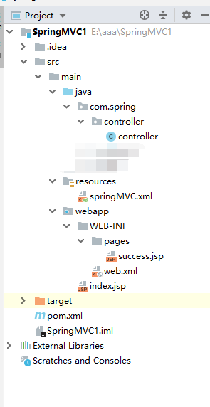
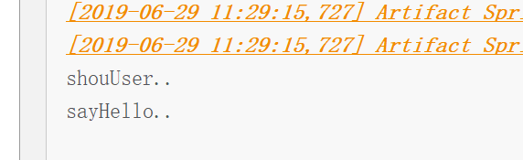
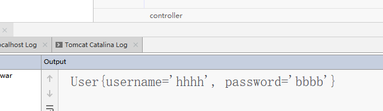
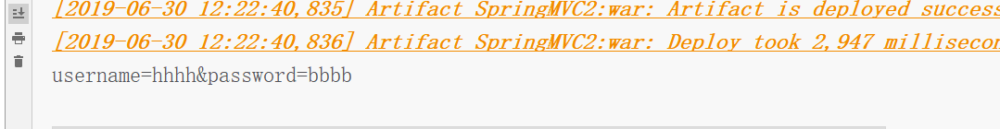
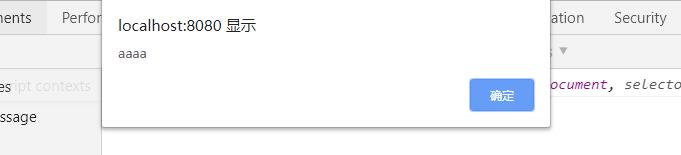
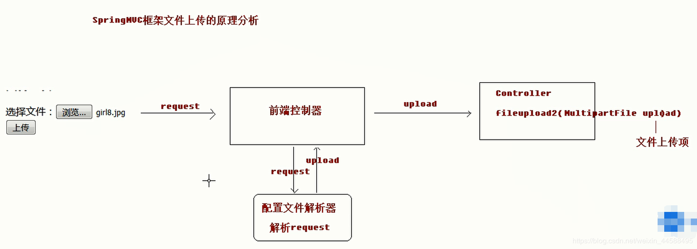
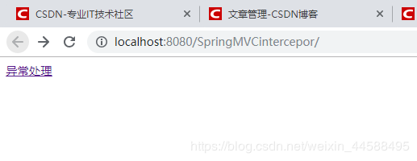
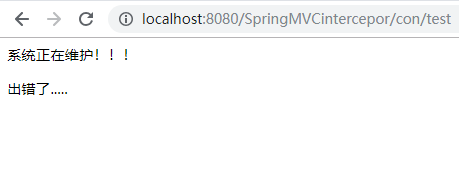
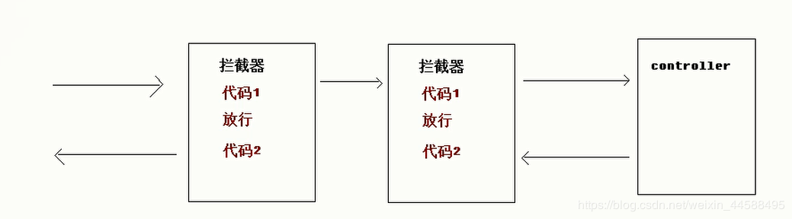
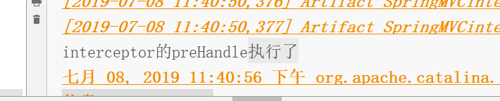

<!DOCTYPE html>
<html>
<head><meta name="generator" content="Hexo 3.9.0">
  <meta charset="utf-8">
  
  <!-- springMVC基础知识 | Zesystem&#39;blog -->
  <title>Zesystem's  Space</title>
  <meta name="viewport" content="width=device-width, initial-scale=1, maximum-scale=1">
  <meta name="keywords" content="This is Zesystem's blog.">
  <!-- 
  
    <meta name="keywords" content="MinHow,MinHow's Blog" />
    -->
  <meta name="description" content="复习了一下springMVC的知识点，随便总结了一下，几乎涵盖了所有springMVC的基础知识。篇幅可能有一些长。">
<meta name="keywords" content="基础知识,SpringMVC">
<meta property="og:type" content="article">
<meta property="og:title" content="springMVC基础知识">
<meta property="og:url" content="https://zesystem.github.io/2019/08/03/springMVC基础知识/index.html">
<meta property="og:site_name" content="Zesystem&#39;blog">
<meta property="og:description" content="复习了一下springMVC的知识点，随便总结了一下，几乎涵盖了所有springMVC的基础知识。篇幅可能有一些长。">
<meta property="og:locale" content="default">
<meta property="og:image" content="https://zesystem.github.io/2019/08/03/springMVC基础知识/2019080311002775.png">
<meta property="og:image" content="https://zesystem.github.io/2019/08/03/springMVC基础知识/20190629112930327.png">
<meta property="og:image" content="https://zesystem.github.io/2019/08/03/springMVC基础知识/20190630122200901.png">
<meta property="og:image" content="https://zesystem.github.io/2019/08/03/springMVC基础知识/20190630122342687.png">
<meta property="og:image" content="https://zesystem.github.io/2019/08/03/springMVC基础知识/20190630124345113.png">
<meta property="og:image" content="https://zesystem.github.io/2019/08/03/springMVC基础知识/20190701124611306.png">
<meta property="og:image" content="https://zesystem.github.io/2019/08/03/springMVC基础知识/20190708232108240.png">
<meta property="og:image" content="https://zesystem.github.io/2019/08/03/springMVC基础知识/20190708232059295.png">
<meta property="og:image" content="https://zesystem.github.io/2019/08/03/springMVC基础知识/20190708222526254.png">
<meta property="og:image" content="https://zesystem.github.io/2019/08/03/springMVC基础知识/20190708234155577.png">
<meta property="og:updated_time" content="2019-08-05T03:04:16.137Z">
<meta name="twitter:card" content="summary">
<meta name="twitter:title" content="springMVC基础知识">
<meta name="twitter:description" content="复习了一下springMVC的知识点，随便总结了一下，几乎涵盖了所有springMVC的基础知识。篇幅可能有一些长。">
<meta name="twitter:image" content="https://zesystem.github.io/2019/08/03/springMVC基础知识/2019080311002775.png">
  
  
    <link rel="icon" href="/favicon.ico">
  
  <link href="//cdn.bootcss.com/font-awesome/4.7.0/css/font-awesome.min.css" rel="stylesheet" type="text/css">
  <link rel="stylesheet" href="/css/style.css">
  <script src="/js/pace.min.js"></script>
  

  
	<script>
	var _hmt = _hmt || [];
	(function() {
	  var hm = document.createElement("script");
	  hm.src = "//hm.baidu.com/hm.js?true";
	  var s = document.getElementsByTagName("script")[0]; 
	  s.parentNode.insertBefore(hm, s);
	})();
	</script>

  
  <div style="display: none;">
    <script src="//s22.cnzz.com/z_stat.php?id=true&web_id=true" language="JavaScript"></script>
  </div>


</head>
</html>
<body>
  <div id="container">
      <header id="header">
    <div id="banner"></div>
    <div id="header-outer">
        <div id="header-menu" class="header-menu-pos animated">
            <div class="header-menu-container">
                <a href="/" class="left">
                    <span class="site-title">Zesystem</span>
                </a>
                <nav id="header-menu-nav" class="right">
                    
                    <a  href="/">
                        <i class="fa fa-home"></i>
                        <span>我的家</span>
                    </a>
                    
                    <a  href="/archives">
                        <i class="fa fa-archive"></i>
                        <span>干货s</span>
                    </a>
                    
                    <a  href="/about">
                        <i class="fa fa-user"></i>
                        <span>关于me</span>
                    </a>
                    
                </nav>
                <a class="mobile-header-menu-button">
                    <i class="fa fa-bars"></i>
                </a>
            </div>
        </div>
        <div id="header-row">
            <div id="logo">
                <a href="/">
                    
                </a>
            </div>
            <div class="header-info">
                <div id="header-title">
                    
                    <h2>
                        Zesystem
                    </h2>
                    
                </div>
                <div id="header-description">
                    
                    <h3>
                        不平凡的人生需要走不平凡的路
                    </h3>
                    
                </div>
            </div>
            <nav class="header-nav">
                <div class="social">
                    
                        <a title="CSDN" target="_blank" href="https://blog.csdn.net/weixin_44588495">
                            <i class="fa fa-home fa-2x"></i></a>
                    
                        <a title="Github" target="_blank" href="https://github.com/Zesystem">
                            <i class="fa fa-github fa-2x"></i></a>
                    
                        <a title="2502266520"  ">
                            <i class="fa fa-qq fa-2x"></i></a>
                    
                </div>
            </nav>
        </div>
    </div>
</header>
      <div class="outer">
        <section id="main" class="body-wrap"><article id="post-springMVC基础知识" class="article article-type-post" itemscope itemprop="blogPost">
  <div class="article-inner">
    
      <header class="article-header">
        
  
    <h1 class="post-title" itemprop="name">
      springMVC基础知识
    </h1>
    <div class="post-title-bar">
      <ul>
          
              <li>
                  <i class="fa fa-book"></i>
                  
                      <a href="/categories/java框架/">java框架</a>
                  
              </li>
          
        <li>
          <i class="fa fa-calendar"></i>  2019-08-03
        </li>
        <li>
          <i class="fa fa-eye"></i>
          <span id="busuanzi_value_page_pv"></span>
        </li>
      </ul>
    </div>
  

          
      </header>
    
    <div class="article-entry post-content" itemprop="articleBody">
      
            
            <p>复习了一下springMVC的知识点，随便总结了一下，几乎涵盖了所有springMVC的基础知识。篇幅可能有一些长。</p>
<a id="more"></a>
<h2 id="1、简单搭建一个springMVC"><a href="#1、简单搭建一个springMVC" class="headerlink" title="1、简单搭建一个springMVC"></a>1、简单搭建一个springMVC</h2><h3 id="项目目录"><a href="#项目目录" class="headerlink" title="项目目录"></a>项目目录</h3><p></p>
<h3 id="引入所需要的依赖"><a href="#引入所需要的依赖" class="headerlink" title="引入所需要的依赖"></a>引入所需要的依赖</h3><ul>
<li>这里我们采用maven工程去管理我们所需要的jar包。在pom.xml中引入我们的依赖。<figure class="highlight xml"><table><tr><td class="gutter"><pre><span class="line">1</span><br><span class="line">2</span><br><span class="line">3</span><br><span class="line">4</span><br><span class="line">5</span><br><span class="line">6</span><br><span class="line">7</span><br><span class="line">8</span><br><span class="line">9</span><br><span class="line">10</span><br><span class="line">11</span><br><span class="line">12</span><br><span class="line">13</span><br><span class="line">14</span><br><span class="line">15</span><br><span class="line">16</span><br><span class="line">17</span><br><span class="line">18</span><br><span class="line">19</span><br><span class="line">20</span><br><span class="line">21</span><br><span class="line">22</span><br><span class="line">23</span><br><span class="line">24</span><br><span class="line">25</span><br><span class="line">26</span><br><span class="line">27</span><br><span class="line">28</span><br><span class="line">29</span><br><span class="line">30</span><br><span class="line">31</span><br><span class="line">32</span><br><span class="line">33</span><br><span class="line">34</span><br><span class="line">35</span><br><span class="line">36</span><br><span class="line">37</span><br><span class="line">38</span><br><span class="line">39</span><br><span class="line">40</span><br><span class="line">41</span><br><span class="line">42</span><br><span class="line">43</span><br><span class="line">44</span><br><span class="line">45</span><br><span class="line">46</span><br><span class="line">47</span><br><span class="line">48</span><br></pre></td><td class="code"><pre><span class="line"><span class="tag">&lt;<span class="name">properties</span>&gt;</span></span><br><span class="line">    <span class="tag">&lt;<span class="name">project.build.sourceEncoding</span>&gt;</span>UTF-8<span class="tag">&lt;/<span class="name">project.build.sourceEncoding</span>&gt;</span></span><br><span class="line">    <span class="tag">&lt;<span class="name">maven.compiler.source</span>&gt;</span>1.8<span class="tag">&lt;/<span class="name">maven.compiler.source</span>&gt;</span></span><br><span class="line">    <span class="tag">&lt;<span class="name">maven.compiler.target</span>&gt;</span>1.8<span class="tag">&lt;/<span class="name">maven.compiler.target</span>&gt;</span></span><br><span class="line"><span class="comment">&lt;!--    锁定版本号--&gt;</span></span><br><span class="line">    <span class="tag">&lt;<span class="name">spring.version</span>&gt;</span>5.0.2.RELEASE<span class="tag">&lt;/<span class="name">spring.version</span>&gt;</span></span><br><span class="line">  <span class="tag">&lt;/<span class="name">properties</span>&gt;</span></span><br><span class="line"></span><br><span class="line">  <span class="tag">&lt;<span class="name">dependencies</span>&gt;</span></span><br><span class="line">    <span class="tag">&lt;<span class="name">dependency</span>&gt;</span></span><br><span class="line">      <span class="tag">&lt;<span class="name">groupId</span>&gt;</span>org.springframework<span class="tag">&lt;/<span class="name">groupId</span>&gt;</span></span><br><span class="line">      <span class="tag">&lt;<span class="name">artifactId</span>&gt;</span>spring-context<span class="tag">&lt;/<span class="name">artifactId</span>&gt;</span></span><br><span class="line">      <span class="tag">&lt;<span class="name">version</span>&gt;</span>$&#123;spring.version&#125;<span class="tag">&lt;/<span class="name">version</span>&gt;</span></span><br><span class="line">    <span class="tag">&lt;/<span class="name">dependency</span>&gt;</span></span><br><span class="line"></span><br><span class="line">    <span class="tag">&lt;<span class="name">dependency</span>&gt;</span></span><br><span class="line">      <span class="tag">&lt;<span class="name">groupId</span>&gt;</span>org.springframework<span class="tag">&lt;/<span class="name">groupId</span>&gt;</span></span><br><span class="line">      <span class="tag">&lt;<span class="name">artifactId</span>&gt;</span>spring-web<span class="tag">&lt;/<span class="name">artifactId</span>&gt;</span></span><br><span class="line">      <span class="tag">&lt;<span class="name">version</span>&gt;</span>$&#123;spring.version&#125;<span class="tag">&lt;/<span class="name">version</span>&gt;</span></span><br><span class="line">    <span class="tag">&lt;/<span class="name">dependency</span>&gt;</span></span><br><span class="line"></span><br><span class="line">    <span class="tag">&lt;<span class="name">dependency</span>&gt;</span></span><br><span class="line">      <span class="tag">&lt;<span class="name">groupId</span>&gt;</span>org.springframework<span class="tag">&lt;/<span class="name">groupId</span>&gt;</span></span><br><span class="line">      <span class="tag">&lt;<span class="name">artifactId</span>&gt;</span>spring-webmvc<span class="tag">&lt;/<span class="name">artifactId</span>&gt;</span></span><br><span class="line">      <span class="tag">&lt;<span class="name">version</span>&gt;</span>$&#123;spring.version&#125;<span class="tag">&lt;/<span class="name">version</span>&gt;</span></span><br><span class="line">    <span class="tag">&lt;/<span class="name">dependency</span>&gt;</span></span><br><span class="line"></span><br><span class="line">    <span class="tag">&lt;<span class="name">dependency</span>&gt;</span></span><br><span class="line">      <span class="tag">&lt;<span class="name">groupId</span>&gt;</span>javax.servlet<span class="tag">&lt;/<span class="name">groupId</span>&gt;</span></span><br><span class="line">      <span class="tag">&lt;<span class="name">artifactId</span>&gt;</span>servlet-api<span class="tag">&lt;/<span class="name">artifactId</span>&gt;</span></span><br><span class="line">      <span class="tag">&lt;<span class="name">version</span>&gt;</span>2.5<span class="tag">&lt;/<span class="name">version</span>&gt;</span></span><br><span class="line">      <span class="tag">&lt;<span class="name">scope</span>&gt;</span>provided<span class="tag">&lt;/<span class="name">scope</span>&gt;</span></span><br><span class="line">    <span class="tag">&lt;/<span class="name">dependency</span>&gt;</span></span><br><span class="line"></span><br><span class="line">    <span class="tag">&lt;<span class="name">dependency</span>&gt;</span></span><br><span class="line">      <span class="tag">&lt;<span class="name">groupId</span>&gt;</span>javax.servlet.jsp<span class="tag">&lt;/<span class="name">groupId</span>&gt;</span></span><br><span class="line">      <span class="tag">&lt;<span class="name">artifactId</span>&gt;</span>jsp-api<span class="tag">&lt;/<span class="name">artifactId</span>&gt;</span></span><br><span class="line">      <span class="tag">&lt;<span class="name">version</span>&gt;</span>2.0<span class="tag">&lt;/<span class="name">version</span>&gt;</span></span><br><span class="line">      <span class="tag">&lt;<span class="name">scope</span>&gt;</span>provided<span class="tag">&lt;/<span class="name">scope</span>&gt;</span></span><br><span class="line">    <span class="tag">&lt;/<span class="name">dependency</span>&gt;</span></span><br><span class="line"></span><br><span class="line">    <span class="tag">&lt;<span class="name">dependency</span>&gt;</span></span><br><span class="line">      <span class="tag">&lt;<span class="name">groupId</span>&gt;</span>junit<span class="tag">&lt;/<span class="name">groupId</span>&gt;</span></span><br><span class="line">      <span class="tag">&lt;<span class="name">artifactId</span>&gt;</span>junit<span class="tag">&lt;/<span class="name">artifactId</span>&gt;</span></span><br><span class="line">      <span class="tag">&lt;<span class="name">version</span>&gt;</span>4.11<span class="tag">&lt;/<span class="name">version</span>&gt;</span></span><br><span class="line">      <span class="tag">&lt;<span class="name">scope</span>&gt;</span>test<span class="tag">&lt;/<span class="name">scope</span>&gt;</span></span><br><span class="line">    <span class="tag">&lt;/<span class="name">dependency</span>&gt;</span></span><br><span class="line">  <span class="tag">&lt;/<span class="name">dependencies</span>&gt;</span></span><br></pre></td></tr></table></figure>

</li>
</ul>
<h3 id="配置web-xml"><a href="#配置web-xml" class="headerlink" title="配置web.xml"></a>配置web.xml</h3><ul>
<li>这里面配有前端控制器和加载springMVC的配置文件。同时我们一般配置解决中文乱码。<figure class="highlight xml"><table><tr><td class="gutter"><pre><span class="line">1</span><br><span class="line">2</span><br><span class="line">3</span><br><span class="line">4</span><br><span class="line">5</span><br><span class="line">6</span><br><span class="line">7</span><br><span class="line">8</span><br><span class="line">9</span><br><span class="line">10</span><br><span class="line">11</span><br><span class="line">12</span><br><span class="line">13</span><br><span class="line">14</span><br><span class="line">15</span><br><span class="line">16</span><br><span class="line">17</span><br><span class="line">18</span><br><span class="line">19</span><br><span class="line">20</span><br><span class="line">21</span><br><span class="line">22</span><br><span class="line">23</span><br><span class="line">24</span><br><span class="line">25</span><br><span class="line">26</span><br><span class="line">27</span><br><span class="line">28</span><br><span class="line">29</span><br><span class="line">30</span><br><span class="line">31</span><br><span class="line">32</span><br><span class="line">33</span><br><span class="line">34</span><br></pre></td><td class="code"><pre><span class="line"><span class="meta">&lt;!DOCTYPE web-app PUBLIC</span></span><br><span class="line"><span class="meta"> "-//Sun Microsystems, Inc.//DTD Web Application 2.3//EN"</span></span><br><span class="line"><span class="meta"> "http://java.sun.com/dtd/web-app_2_3.dtd" &gt;</span></span><br><span class="line"></span><br><span class="line"><span class="tag">&lt;<span class="name">web-app</span>&gt;</span></span><br><span class="line">  <span class="tag">&lt;<span class="name">display-name</span>&gt;</span>Archetype Created Web Application<span class="tag">&lt;/<span class="name">display-name</span>&gt;</span></span><br><span class="line"><span class="comment">&lt;!--  配置servlet--&gt;</span></span><br><span class="line">  <span class="tag">&lt;<span class="name">servlet</span>&gt;</span></span><br><span class="line">    <span class="tag">&lt;<span class="name">servlet-name</span>&gt;</span>dispatcherServlet<span class="tag">&lt;/<span class="name">servlet-name</span>&gt;</span></span><br><span class="line">    <span class="tag">&lt;<span class="name">servlet-class</span>&gt;</span>org.springframework.web.servlet.DispatcherServlet<span class="tag">&lt;/<span class="name">servlet-class</span>&gt;</span></span><br><span class="line"><span class="comment">&lt;!--    加载SpringMVC配置文件--&gt;</span></span><br><span class="line">    <span class="tag">&lt;<span class="name">init-param</span>&gt;</span></span><br><span class="line">      <span class="tag">&lt;<span class="name">param-name</span>&gt;</span>contextConfigLocation<span class="tag">&lt;/<span class="name">param-name</span>&gt;</span></span><br><span class="line">      <span class="tag">&lt;<span class="name">param-value</span>&gt;</span>classpath:springMVC.xml<span class="tag">&lt;/<span class="name">param-value</span>&gt;</span></span><br><span class="line">    <span class="tag">&lt;/<span class="name">init-param</span>&gt;</span></span><br><span class="line">    <span class="tag">&lt;<span class="name">load-on-startup</span>&gt;</span>1<span class="tag">&lt;/<span class="name">load-on-startup</span>&gt;</span></span><br><span class="line">  <span class="tag">&lt;/<span class="name">servlet</span>&gt;</span></span><br><span class="line">  <span class="tag">&lt;<span class="name">servlet-mapping</span>&gt;</span></span><br><span class="line">    <span class="tag">&lt;<span class="name">servlet-name</span>&gt;</span>dispatcherServlet<span class="tag">&lt;/<span class="name">servlet-name</span>&gt;</span></span><br><span class="line">    <span class="tag">&lt;<span class="name">url-pattern</span>&gt;</span>/<span class="tag">&lt;/<span class="name">url-pattern</span>&gt;</span></span><br><span class="line">  <span class="tag">&lt;/<span class="name">servlet-mapping</span>&gt;</span></span><br><span class="line">   <span class="tag">&lt;<span class="name">filter</span>&gt;</span></span><br><span class="line">    <span class="tag">&lt;<span class="name">filter-name</span>&gt;</span>characterEncodingFilter<span class="tag">&lt;/<span class="name">filter-name</span>&gt;</span></span><br><span class="line">    <span class="tag">&lt;<span class="name">filter-class</span>&gt;</span>org.springframework.web.filter.CharacterEncodingFilter<span class="tag">&lt;/<span class="name">filter-class</span>&gt;</span></span><br><span class="line">    <span class="tag">&lt;<span class="name">init-param</span>&gt;</span></span><br><span class="line">      <span class="tag">&lt;<span class="name">param-name</span>&gt;</span>encoding<span class="tag">&lt;/<span class="name">param-name</span>&gt;</span></span><br><span class="line">      <span class="tag">&lt;<span class="name">param-value</span>&gt;</span>UTF-8<span class="tag">&lt;/<span class="name">param-value</span>&gt;</span></span><br><span class="line">    <span class="tag">&lt;/<span class="name">init-param</span>&gt;</span></span><br><span class="line">  <span class="tag">&lt;/<span class="name">filter</span>&gt;</span></span><br><span class="line">  <span class="tag">&lt;<span class="name">filter-mapping</span>&gt;</span></span><br><span class="line">    <span class="tag">&lt;<span class="name">filter-name</span>&gt;</span>characterEncodingFilter<span class="tag">&lt;/<span class="name">filter-name</span>&gt;</span></span><br><span class="line">    <span class="tag">&lt;<span class="name">url-pattern</span>&gt;</span>/*<span class="tag">&lt;/<span class="name">url-pattern</span>&gt;</span></span><br><span class="line">  <span class="tag">&lt;/<span class="name">filter-mapping</span>&gt;</span></span><br><span class="line"><span class="tag">&lt;/<span class="name">web-app</span>&gt;</span></span><br></pre></td></tr></table></figure>

</li>
</ul>
<h3 id="springMVC-xml文件"><a href="#springMVC-xml文件" class="headerlink" title="springMVC.xml文件"></a>springMVC.xml文件</h3><ul>
<li>这里需要配置扫描对应的controller注解、配置视图解析器、配置映射处理器、配置处理器适配器、开启注解扫描、过滤静态资源等。<figure class="highlight xml"><table><tr><td class="gutter"><pre><span class="line">1</span><br><span class="line">2</span><br><span class="line">3</span><br><span class="line">4</span><br><span class="line">5</span><br><span class="line">6</span><br><span class="line">7</span><br><span class="line">8</span><br><span class="line">9</span><br><span class="line">10</span><br><span class="line">11</span><br><span class="line">12</span><br><span class="line">13</span><br><span class="line">14</span><br><span class="line">15</span><br><span class="line">16</span><br><span class="line">17</span><br><span class="line">18</span><br><span class="line">19</span><br><span class="line">20</span><br><span class="line">21</span><br><span class="line">22</span><br><span class="line">23</span><br><span class="line">24</span><br><span class="line">25</span><br><span class="line">26</span><br><span class="line">27</span><br><span class="line">28</span><br><span class="line">29</span><br><span class="line">30</span><br><span class="line">31</span><br><span class="line">32</span><br><span class="line">33</span><br><span class="line">34</span><br></pre></td><td class="code"><pre><span class="line"><span class="meta">&lt;?xml version="1.0" encoding="UTF-8"?&gt;</span></span><br><span class="line"><span class="tag">&lt;<span class="name">beans</span> <span class="attr">xmlns</span>=<span class="string">"http://www.springframework.org/schema/beans"</span></span></span><br><span class="line"><span class="tag">       <span class="attr">xmlns:mvc</span>=<span class="string">"http://www.springframework.org/schema/mvc"</span></span></span><br><span class="line"><span class="tag">       <span class="attr">xmlns:context</span>=<span class="string">"http://www.springframework.org/schema/context"</span></span></span><br><span class="line"><span class="tag">       <span class="attr">xmlns:xsi</span>=<span class="string">"http://www.w3.org/2001/XMLSchema-instance"</span></span></span><br><span class="line"><span class="tag">       <span class="attr">xsi:schemaLocation</span>=<span class="string">"</span></span></span><br><span class="line"><span class="tag"><span class="string">             http://www.springframework.org/schema/beans</span></span></span><br><span class="line"><span class="tag"><span class="string">             http://www.springframework.org/schema/beans/spring-beans.xsd</span></span></span><br><span class="line"><span class="tag"><span class="string">             http://www.springframework.org/schema/mvc</span></span></span><br><span class="line"><span class="tag"><span class="string">             http://www.springframework.org/schema/mvc/spring-mvc.xsd</span></span></span><br><span class="line"><span class="tag"><span class="string">             http://www.springframework.org/schema/context</span></span></span><br><span class="line"><span class="tag"><span class="string">             http://www.springframework.org/schema/context/spring-context.xsd</span></span></span><br><span class="line"><span class="tag"><span class="string">        "</span>&gt;</span></span><br><span class="line"><span class="comment">&lt;!--    扫描对应的包--&gt;</span></span><br><span class="line">    <span class="tag">&lt;<span class="name">context:component-scan</span> <span class="attr">base-package</span>=<span class="string">"com.spring"</span>&gt;</span><span class="tag">&lt;/<span class="name">context:component-scan</span>&gt;</span></span><br><span class="line"><span class="comment">&lt;!--    视图解析器--&gt;</span></span><br><span class="line">    <span class="tag">&lt;<span class="name">bean</span> <span class="attr">id</span>=<span class="string">"internalResourceViewResolver"</span> <span class="attr">class</span>=<span class="string">"org.springframework.web.servlet.view.InternalResourceViewResolver"</span>&gt;</span></span><br><span class="line">        <span class="tag">&lt;<span class="name">property</span> <span class="attr">name</span>=<span class="string">"prefix"</span> <span class="attr">value</span>=<span class="string">"/WEB-INF/pages/"</span>&gt;</span><span class="tag">&lt;/<span class="name">property</span>&gt;</span></span><br><span class="line">        <span class="tag">&lt;<span class="name">property</span> <span class="attr">name</span>=<span class="string">"suffix"</span> <span class="attr">value</span>=<span class="string">".jsp"</span>&gt;</span><span class="tag">&lt;/<span class="name">property</span>&gt;</span></span><br><span class="line">    <span class="tag">&lt;/<span class="name">bean</span>&gt;</span></span><br><span class="line">    <span class="tag">&lt;<span class="name">bean</span> <span class="attr">id</span>=<span class="string">"multipartResolver"</span> <span class="attr">class</span>=<span class="string">"org.springframework.web.multipart.commons.CommonsMultipartResolver"</span>&gt;</span></span><br><span class="line">        <span class="tag">&lt;<span class="name">property</span> <span class="attr">name</span>=<span class="string">"maxUploadSize"</span> <span class="attr">value</span>=<span class="string">"10485760"</span>/&gt;</span></span><br><span class="line">    <span class="tag">&lt;/<span class="name">bean</span>&gt;</span></span><br><span class="line"><span class="comment">&lt;!--    映射处理器--&gt;</span></span><br><span class="line">    <span class="tag">&lt;<span class="name">bean</span> <span class="attr">class</span>=<span class="string">"org.springframework.web.servlet.mvc.method.RequestMappingInfoHandlerMapping"</span> <span class="attr">abstract</span>=<span class="string">"true"</span>/&gt;</span></span><br><span class="line"><span class="comment">&lt;!--    处理器适配器--&gt;</span></span><br><span class="line">    <span class="tag">&lt;<span class="name">bean</span> <span class="attr">class</span>=<span class="string">"org.springframework.web.servlet.mvc.method.AbstractHandlerMethodAdapter"</span> <span class="attr">abstract</span>=<span class="string">"true"</span>/&gt;</span></span><br><span class="line">    <span class="tag">&lt;<span class="name">mvc:annotation-driven</span> /&gt;</span></span><br><span class="line"><span class="comment">&lt;!--    静态资源--&gt;</span></span><br><span class="line">    <span class="tag">&lt;<span class="name">mvc:resources</span> <span class="attr">mapping</span>=<span class="string">"/css/*"</span> <span class="attr">location</span>=<span class="string">"resources/css/"</span>/&gt;</span></span><br><span class="line">    <span class="tag">&lt;<span class="name">mvc:resources</span> <span class="attr">mapping</span>=<span class="string">"/js/*"</span> <span class="attr">location</span>=<span class="string">"resources/js/"</span>/&gt;</span></span><br><span class="line">    <span class="tag">&lt;<span class="name">mvc:resources</span> <span class="attr">mapping</span>=<span class="string">"/images/*"</span> <span class="attr">location</span>=<span class="string">"resources/images/"</span>/&gt;</span></span><br><span class="line"></span><br><span class="line"><span class="tag">&lt;/<span class="name">beans</span>&gt;</span></span><br></pre></td></tr></table></figure>

</li>
</ul>
<h3 id="Controlle类"><a href="#Controlle类" class="headerlink" title="Controlle类"></a>Controlle类</h3><ul>
<li>开启tomcat后就可以扫描找到对应的controller类，通过/con/test找到对应的方法，返回success.jsp页面。<figure class="highlight java"><table><tr><td class="gutter"><pre><span class="line">1</span><br><span class="line">2</span><br><span class="line">3</span><br><span class="line">4</span><br><span class="line">5</span><br><span class="line">6</span><br><span class="line">7</span><br><span class="line">8</span><br><span class="line">9</span><br><span class="line">10</span><br><span class="line">11</span><br><span class="line">12</span><br><span class="line">13</span><br><span class="line">14</span><br><span class="line">15</span><br><span class="line">16</span><br><span class="line">17</span><br></pre></td><td class="code"><pre><span class="line"><span class="keyword">package</span> com.spring.controller;</span><br><span class="line"></span><br><span class="line"><span class="keyword">import</span> org.springframework.stereotype.Controller;</span><br><span class="line"><span class="keyword">import</span> org.springframework.web.bind.annotation.RequestMapping;</span><br><span class="line"></span><br><span class="line"><span class="keyword">import</span> java.util.UUID;</span><br><span class="line"></span><br><span class="line"><span class="meta">@Controller</span></span><br><span class="line"><span class="meta">@RequestMapping</span>(path = <span class="string">"con"</span>)</span><br><span class="line"><span class="keyword">public</span> <span class="class"><span class="keyword">class</span> <span class="title">controller</span> </span>&#123;</span><br><span class="line">    <span class="meta">@RequestMapping</span>(path = <span class="string">"test"</span>)</span><br><span class="line">    <span class="function"><span class="keyword">public</span> String <span class="title">test</span><span class="params">()</span> t </span>&#123;</span><br><span class="line"></span><br><span class="line">        <span class="keyword">return</span> <span class="string">"success"</span>;</span><br><span class="line">    &#125;</span><br><span class="line"></span><br><span class="line">&#125;</span><br></pre></td></tr></table></figure>

</li>
</ul>
<h2 id="2、请求参数绑定"><a href="#2、请求参数绑定" class="headerlink" title="2、请求参数绑定"></a>2、请求参数绑定</h2><h3 id="RequestMapping注解"><a href="#RequestMapping注解" class="headerlink" title="@RequestMapping注解"></a>@RequestMapping注解</h3><ul>
<li>这是一个非常重要的注解。这个注解用于用户的请求路径。<blockquote>
<p>**作用：用于建立请求URL和处理请求方法之间的对应关系。<br>当该注解放在类上的时候就表示的是一级访问目录。<br>当该方法放在方法上的时候就表示是二级访问目录。<br>属性：<br>value：用于指定请求的URL。它和path属性的作用是一样的。<br>method：用于指定请求的方式。</p>
</blockquote>
</li>
<li>例如：<blockquote>
<p>1、@RequestMapping(path = “/hello”,method = {RequestMethod.POST})params：用于指定限制请求参数的条件。它支持简单的表达式。要求请求参数的key和value必须和配置的一摸一样。<br>2、@RequestMapping(path = “/hello”,method = {RequestMethod.POST},params = {“username”})&lt;a href=“user/hello?username=111”&gt;asdasd &lt;/ a&gt;<br>3、@RequestMapping(path = “hello”,headers = {“Accept”})，headers：发送的请求中必须包含请求头**</p>
</blockquote>
<h3 id="请求参数绑定"><a href="#请求参数绑定" class="headerlink" title="请求参数绑定"></a>请求参数绑定</h3></li>
<li>请求参数的绑定说明<ul>
<li>绑定机制<ul>
<li>表单提交的数据都是k=v格式的，username=111&amp;&amp;password=222</li>
<li>SpringMVC的参数绑定过程是把表单提交的请求参数，作为控制器中方法的参数进行绑定的</li>
<li>要求：提交提交表单的name和参数的名称是相同的</li>
</ul>
</li>
<li>支持的数据类型<ul>
<li>基本数据类型和字符串类型</li>
<li>实体类型（JavaBean）</li>
<li>集合数据类型（List，map集合等）<h3 id="基本数据类型和字符串类型"><a href="#基本数据类型和字符串类型" class="headerlink" title="基本数据类型和字符串类型"></a>基本数据类型和字符串类型</h3><ul>
<li>对于普通的基本类型参数，只需要在方法的参数中参数名与前端提交的form表单的name名字一样就可以，传递到后端。<figure class="highlight java"><table><tr><td class="gutter"><pre><span class="line">1</span><br><span class="line">2</span><br><span class="line">3</span><br><span class="line">4</span><br><span class="line">5</span><br><span class="line">6</span><br><span class="line">7</span><br><span class="line">8</span><br></pre></td><td class="code"><pre><span class="line"><span class="meta">@Controller</span></span><br><span class="line"><span class="meta">@RequestMapping</span>(path = <span class="string">"user"</span>)</span><br><span class="line"><span class="keyword">public</span> <span class="class"><span class="keyword">class</span> <span class="title">controller</span> </span>&#123;</span><br><span class="line">    <span class="meta">@RequestMapping</span>(path = <span class="string">"hello"</span>)</span><br><span class="line">    <span class="function"><span class="keyword">public</span> String <span class="title">sayHellow</span><span class="params">(String username,String password)</span></span>&#123;</span><br><span class="line">        <span class="keyword">return</span> <span class="string">"success"</span>;</span><br><span class="line">    &#125;</span><br><span class="line">&#125;</span><br></pre></td></tr></table></figure>

</li>
</ul>
</li>
</ul>
</li>
</ul>
</li>
</ul>
<figure class="highlight html"><table><tr><td class="gutter"><pre><span class="line">1</span><br><span class="line">2</span><br><span class="line">3</span><br><span class="line">4</span><br><span class="line">5</span><br></pre></td><td class="code"><pre><span class="line"><span class="tag">&lt;<span class="name">form</span> <span class="attr">action</span>=<span class="string">"user/hello"</span>&gt;</span></span><br><span class="line">    <span class="tag">&lt;<span class="name">input</span> <span class="attr">type</span>=<span class="string">"text"</span> <span class="attr">name</span>=<span class="string">"username"</span>&gt;</span></span><br><span class="line">    <span class="tag">&lt;<span class="name">input</span> <span class="attr">type</span>=<span class="string">"text"</span> <span class="attr">name</span>=<span class="string">"password"</span>&gt;</span></span><br><span class="line">    <span class="tag">&lt;<span class="name">input</span> <span class="attr">type</span>=<span class="string">"submit"</span>&gt;</span></span><br><span class="line"><span class="tag">&lt;/<span class="name">form</span>&gt;</span></span><br></pre></td></tr></table></figure>

<ul>
<li>直接就可以获取表单的username和password。<h3 id="实体类型（JavaBean）"><a href="#实体类型（JavaBean）" class="headerlink" title="实体类型（JavaBean）"></a>实体类型（JavaBean）</h3></li>
<li>这里面的Account是一个类，类里面包含了username、password、user（对象），有get和set方法，同时user对象有name、和age两个属性，也有get和set方法。这里面需要表单名称和对象属性名称一致。<figure class="highlight java"><table><tr><td class="gutter"><pre><span class="line">1</span><br><span class="line">2</span><br><span class="line">3</span><br><span class="line">4</span><br><span class="line">5</span><br><span class="line">6</span><br><span class="line">7</span><br><span class="line">8</span><br><span class="line">9</span><br></pre></td><td class="code"><pre><span class="line"><span class="meta">@Controller</span></span><br><span class="line"><span class="meta">@RequestMapping</span>(path = <span class="string">"user"</span>)</span><br><span class="line"><span class="keyword">public</span> <span class="class"><span class="keyword">class</span> <span class="title">controller</span> </span>&#123;</span><br><span class="line">    <span class="meta">@RequestMapping</span>(path = <span class="string">"hello"</span>)</span><br><span class="line">    <span class="function"><span class="keyword">public</span> String <span class="title">sayHellow</span><span class="params">(Account account)</span></span>&#123;</span><br><span class="line">        System.out.println(account);</span><br><span class="line">        <span class="keyword">return</span> <span class="string">"success"</span>;</span><br><span class="line">    &#125;</span><br><span class="line">&#125;</span><br></pre></td></tr></table></figure>

</li>
</ul>
<figure class="highlight html"><table><tr><td class="gutter"><pre><span class="line">1</span><br><span class="line">2</span><br><span class="line">3</span><br><span class="line">4</span><br><span class="line">5</span><br><span class="line">6</span><br><span class="line">7</span><br></pre></td><td class="code"><pre><span class="line"><span class="tag">&lt;<span class="name">form</span> <span class="attr">method</span>=<span class="string">"post"</span> <span class="attr">action</span>=<span class="string">"user/hello"</span> &gt;</span></span><br><span class="line">    <span class="tag">&lt;<span class="name">input</span> <span class="attr">type</span>=<span class="string">"text"</span> <span class="attr">name</span>=<span class="string">"username"</span>&gt;</span></span><br><span class="line">    <span class="tag">&lt;<span class="name">input</span> <span class="attr">type</span>=<span class="string">"text"</span> <span class="attr">name</span>=<span class="string">"password"</span>&gt;</span></span><br><span class="line">    <span class="tag">&lt;<span class="name">input</span> <span class="attr">type</span>=<span class="string">"text"</span> <span class="attr">name</span>=<span class="string">"user.name"</span>&gt;</span></span><br><span class="line">    <span class="tag">&lt;<span class="name">input</span> <span class="attr">type</span>=<span class="string">"text"</span> <span class="attr">name</span>=<span class="string">"user.age"</span>&gt;</span></span><br><span class="line">    <span class="tag">&lt;<span class="name">input</span> <span class="attr">type</span>=<span class="string">"submit"</span> <span class="attr">name</span>=<span class="string">"submit"</span>&gt;</span></span><br><span class="line"><span class="tag">&lt;/<span class="name">form</span>&gt;</span></span><br></pre></td></tr></table></figure>

<h3 id="集合数据类型（List，map集合等）"><a href="#集合数据类型（List，map集合等）" class="headerlink" title="集合数据类型（List，map集合等）"></a>集合数据类型（List，map集合等）</h3><ul>
<li>这里面的list和map集合，可以通过类似于数组索引的东西进行存储数据。list集合用的是0开始的索引（数组下标），map集合用的制定的字符串形式的索引。<br>Account类</li>
</ul>
<figure class="highlight java"><table><tr><td class="gutter"><pre><span class="line">1</span><br><span class="line">2</span><br><span class="line">3</span><br><span class="line">4</span><br><span class="line">5</span><br></pre></td><td class="code"><pre><span class="line"><span class="keyword">public</span> <span class="class"><span class="keyword">class</span> <span class="title">Account</span> <span class="keyword">implements</span> <span class="title">Serializable</span> </span>&#123;</span><br><span class="line">    <span class="keyword">private</span> String username;</span><br><span class="line">    <span class="keyword">private</span> String password;</span><br><span class="line">    <span class="keyword">private</span> List&lt;User&gt; list;</span><br><span class="line">    <span class="keyword">private</span> Map&lt;String,User&gt; map;</span><br></pre></td></tr></table></figure>

<p>controller类</p>
<figure class="highlight java"><table><tr><td class="gutter"><pre><span class="line">1</span><br><span class="line">2</span><br><span class="line">3</span><br><span class="line">4</span><br><span class="line">5</span><br><span class="line">6</span><br><span class="line">7</span><br><span class="line">8</span><br><span class="line">9</span><br></pre></td><td class="code"><pre><span class="line"><span class="meta">@Controller</span></span><br><span class="line"><span class="meta">@RequestMapping</span>(path = <span class="string">"user"</span>)</span><br><span class="line"><span class="keyword">public</span> <span class="class"><span class="keyword">class</span> <span class="title">controller</span> </span>&#123;</span><br><span class="line">    <span class="meta">@RequestMapping</span>(path = <span class="string">"hello"</span>,headers = &#123;<span class="string">"Accept"</span>&#125;)</span><br><span class="line">    <span class="function"><span class="keyword">public</span> String <span class="title">sayHellow</span><span class="params">(Account account)</span></span>&#123;</span><br><span class="line">        System.out.println(account);</span><br><span class="line">        <span class="keyword">return</span> <span class="string">"success"</span>;</span><br><span class="line">    &#125;</span><br><span class="line">&#125;</span><br></pre></td></tr></table></figure>

<figure class="highlight html"><table><tr><td class="gutter"><pre><span class="line">1</span><br><span class="line">2</span><br><span class="line">3</span><br><span class="line">4</span><br><span class="line">5</span><br><span class="line">6</span><br><span class="line">7</span><br><span class="line">8</span><br><span class="line">9</span><br></pre></td><td class="code"><pre><span class="line"><span class="tag">&lt;<span class="name">form</span> <span class="attr">method</span>=<span class="string">"post"</span> <span class="attr">action</span>=<span class="string">"user/hello"</span> &gt;</span></span><br><span class="line">    <span class="tag">&lt;<span class="name">input</span> <span class="attr">type</span>=<span class="string">"text"</span> <span class="attr">name</span>=<span class="string">"username"</span>&gt;</span></span><br><span class="line">    <span class="tag">&lt;<span class="name">input</span> <span class="attr">type</span>=<span class="string">"text"</span> <span class="attr">name</span>=<span class="string">"password"</span>&gt;</span></span><br><span class="line">    <span class="tag">&lt;<span class="name">input</span> <span class="attr">type</span>=<span class="string">"text"</span> <span class="attr">name</span>=<span class="string">"list[0].name"</span>&gt;</span></span><br><span class="line">    <span class="tag">&lt;<span class="name">input</span> <span class="attr">type</span>=<span class="string">"text"</span> <span class="attr">name</span>=<span class="string">"list[0].age"</span>&gt;</span></span><br><span class="line">    <span class="tag">&lt;<span class="name">input</span> <span class="attr">type</span>=<span class="string">"text"</span> <span class="attr">name</span>=<span class="string">"map['one'].name"</span>&gt;</span></span><br><span class="line">    <span class="tag">&lt;<span class="name">input</span> <span class="attr">type</span>=<span class="string">"text"</span> <span class="attr">name</span>=<span class="string">"map['one'].age"</span>&gt;</span></span><br><span class="line">    <span class="tag">&lt;<span class="name">input</span> <span class="attr">type</span>=<span class="string">"submit"</span> <span class="attr">name</span>=<span class="string">"submit"</span>&gt;</span></span><br><span class="line"><span class="tag">&lt;/<span class="name">form</span>&gt;</span></span><br></pre></td></tr></table></figure>

<h3 id="获取原生Servlet的API"><a href="#获取原生Servlet的API" class="headerlink" title="获取原生Servlet的API"></a>获取原生Servlet的API</h3><ul>
<li><p>对于controller的每一个方法，实际上都是一个servlet。同样的也可以获取原生的api，像写servlet那样进行交互。</p>
</li>
<li><p>直接书写request、response就可以了。</p>
<figure class="highlight java"><table><tr><td class="gutter"><pre><span class="line">1</span><br><span class="line">2</span><br><span class="line">3</span><br><span class="line">4</span><br><span class="line">5</span><br><span class="line">6</span><br><span class="line">7</span><br><span class="line">8</span><br><span class="line">9</span><br><span class="line">10</span><br><span class="line">11</span><br><span class="line">12</span><br><span class="line">13</span><br><span class="line">14</span><br></pre></td><td class="code"><pre><span class="line"><span class="meta">@Controller</span></span><br><span class="line"><span class="meta">@RequestMapping</span>(path = <span class="string">"user"</span>)</span><br><span class="line"><span class="keyword">public</span> <span class="class"><span class="keyword">class</span> <span class="title">controller</span> </span>&#123;</span><br><span class="line">    <span class="meta">@RequestMapping</span>(path = <span class="string">"hello"</span>,headers = &#123;<span class="string">"Accept"</span>&#125;)</span><br><span class="line">    <span class="function"><span class="keyword">public</span> String <span class="title">sayHellow</span><span class="params">(HttpServletRequest request, HttpServletResponse response)</span></span>&#123;</span><br><span class="line">        System.out.println(request);</span><br><span class="line">        HttpSession session = request.getSession();</span><br><span class="line">        System.out.println(session);</span><br><span class="line">        ServletContext context = session.getServletContext();</span><br><span class="line">        System.out.println(context);</span><br><span class="line">        System.out.println(response);</span><br><span class="line">        <span class="keyword">return</span> <span class="string">"success"</span>;</span><br><span class="line">    &#125;</span><br><span class="line">&#125;</span><br></pre></td></tr></table></figure>
</li>
<li><p>这些servlet的方法都是可以用的。</p>
<figure class="highlight java"><table><tr><td class="gutter"><pre><span class="line">1</span><br><span class="line">2</span><br><span class="line">3</span><br></pre></td><td class="code"><pre><span class="line">response.setContentType(<span class="string">"text;html;charset=utf-8"</span>);</span><br><span class="line">response.setContentType(<span class="string">"application/json;charset=utf-8"</span>);</span><br><span class="line">response.getWriter().append(json);</span><br></pre></td></tr></table></figure>

</li>
</ul>
<h2 id="3、SpringMVC-常用注解"><a href="#3、SpringMVC-常用注解" class="headerlink" title="3、SpringMVC 常用注解"></a>3、SpringMVC 常用注解</h2><h3 id="RequestParam"><a href="#RequestParam" class="headerlink" title="@RequestParam"></a>@RequestParam</h3><ul>
<li>作用：<br>把请求中指定名称的参数给控制器中的形参赋值</li>
<li>属性：<br>name：请求参数中的名称<br>required：请求参数中是否必须提供此参数。默认为true，表示必须提供，如果不提供就报错。</li>
<li>例如：当前台传输的数据的名称与后台参数列表中的名字不一样的时候，就可以用这种方法，这里的name属性和value是一样的。这里name的属性值就是前台传输过来参数的名称。这种避免了两个名字必须一样的问题。</li>
</ul>
<figure class="highlight java"><table><tr><td class="gutter"><pre><span class="line">1</span><br><span class="line">2</span><br><span class="line">3</span><br><span class="line">4</span><br><span class="line">5</span><br><span class="line">6</span><br><span class="line">7</span><br><span class="line">8</span><br></pre></td><td class="code"><pre><span class="line"><span class="meta">@Controller</span></span><br><span class="line"><span class="meta">@RequestMapping</span>(path = <span class="string">"con"</span>)</span><br><span class="line"><span class="keyword">public</span> <span class="class"><span class="keyword">class</span> <span class="title">controller</span> </span>&#123;</span><br><span class="line">    <span class="meta">@RequestMapping</span>(path = <span class="string">"test"</span>)</span><br><span class="line">    <span class="function"><span class="keyword">public</span> String <span class="title">test</span><span class="params">(@RequestParam(name = <span class="string">"username"</span>)</span> String name) </span>&#123;</span><br><span class="line">        <span class="keyword">return</span> <span class="string">"success"</span>;</span><br><span class="line">    &#125;</span><br><span class="line">&#125;</span><br></pre></td></tr></table></figure>

<h3 id="RequestBody"><a href="#RequestBody" class="headerlink" title="@RequestBody"></a>@RequestBody</h3><ul>
<li>作用：<br>用于获取请求体的内容，直接使用得到的是key=value&amp;key=value …结构的数据。get请求方式不适用。</li>
<li>属性：<br>required：是否必须有请求体。默认值是true，当前取值为true时，get请求方式会报错。如果取值为false，get请求得到的是null。</li>
<li>例如：获取整个请求体的内容。</li>
</ul>
<figure class="highlight java"><table><tr><td class="gutter"><pre><span class="line">1</span><br><span class="line">2</span><br><span class="line">3</span><br><span class="line">4</span><br><span class="line">5</span><br><span class="line">6</span><br><span class="line">7</span><br><span class="line">8</span><br></pre></td><td class="code"><pre><span class="line"><span class="meta">@Controller</span></span><br><span class="line"><span class="meta">@RequestMapping</span>(path = <span class="string">"con"</span>)</span><br><span class="line"><span class="keyword">public</span> <span class="class"><span class="keyword">class</span> <span class="title">controller</span> </span>&#123;</span><br><span class="line">    <span class="meta">@RequestMapping</span>(path = <span class="string">"test"</span>)</span><br><span class="line">    <span class="function"><span class="keyword">public</span> String <span class="title">test</span><span class="params">(@RequestBody String body)</span> </span>&#123;</span><br><span class="line">        <span class="keyword">return</span> <span class="string">"success"</span>;</span><br><span class="line">    &#125;</span><br><span class="line">&#125;</span><br></pre></td></tr></table></figure>

<h3 id="PathVariable"><a href="#PathVariable" class="headerlink" title="@PathVariable"></a>@PathVariable</h3><ul>
<li>作用：<br>拥有绑定URL中的占位符，例如：url中有/delete/{id}，{id}就是占位符</li>
<li>属性：<br>value：指定url中的占位符名称。</li>
<li>Restful风格的url<br>请求路径一样，可以根据不同的请求方式去执行后台的不同方法。</li>
<li>restful风格的url优点：<br>结构清晰、符合标准、易于理解、容易扩展<br>测试：localhost:8080/user/hello/10<figure class="highlight java"><table><tr><td class="gutter"><pre><span class="line">1</span><br><span class="line">2</span><br><span class="line">3</span><br><span class="line">4</span><br><span class="line">5</span><br><span class="line">6</span><br><span class="line">7</span><br><span class="line">8</span><br></pre></td><td class="code"><pre><span class="line"><span class="meta">@Controller</span></span><br><span class="line"><span class="meta">@RequestMapping</span>(path = <span class="string">"con"</span>)</span><br><span class="line"><span class="keyword">public</span> <span class="class"><span class="keyword">class</span> <span class="title">controller</span> </span>&#123;</span><br><span class="line">    <span class="meta">@RequestMapping</span>(path = <span class="string">"test/&#123;sid&#125;"</span>)</span><br><span class="line">    <span class="function"><span class="keyword">public</span> String <span class="title">test</span><span class="params">(@PathVariable(name = <span class="string">"sid"</span>)</span> String id) </span>&#123;</span><br><span class="line">        <span class="keyword">return</span> <span class="string">"success"</span>;</span><br><span class="line">    &#125;</span><br><span class="line">&#125;</span><br></pre></td></tr></table></figure>

</li>
</ul>
<h3 id="RequestHeader"><a href="#RequestHeader" class="headerlink" title="@RequestHeader"></a>@RequestHeader</h3><ul>
<li>作用：<br>用于获取请求消息头</li>
<li>属性：<br>value：提供消息头名称。<br>required：是否必须有此消息头。</li>
<li>实际开发中不怎么用。<br>获取Accept内容。<figure class="highlight java"><table><tr><td class="gutter"><pre><span class="line">1</span><br><span class="line">2</span><br><span class="line">3</span><br><span class="line">4</span><br><span class="line">5</span><br><span class="line">6</span><br><span class="line">7</span><br><span class="line">8</span><br></pre></td><td class="code"><pre><span class="line"><span class="meta">@Controller</span></span><br><span class="line"><span class="meta">@RequestMapping</span>(path = <span class="string">"con"</span>)</span><br><span class="line"><span class="keyword">public</span> <span class="class"><span class="keyword">class</span> <span class="title">controller</span> </span>&#123;</span><br><span class="line">    <span class="meta">@RequestMapping</span>(path = <span class="string">"test"</span>)</span><br><span class="line">    <span class="function"><span class="keyword">public</span> String <span class="title">test</span><span class="params">(@RequestHeader(value = <span class="string">"Accept"</span>)</span> String header) </span>&#123;</span><br><span class="line">        <span class="keyword">return</span> <span class="string">"success"</span>;</span><br><span class="line">    &#125;</span><br><span class="line">&#125;</span><br></pre></td></tr></table></figure>

</li>
</ul>
<h3 id="CookieValue"><a href="#CookieValue" class="headerlink" title="@CookieValue"></a>@CookieValue</h3><ul>
<li>作用：<br>用于指定cookie名称的值传入控制器的方法参数。</li>
<li>属性：<br>value：cookie名称。<br>required：是否必须有此cookie。</li>
</ul>
<figure class="highlight java"><table><tr><td class="gutter"><pre><span class="line">1</span><br><span class="line">2</span><br><span class="line">3</span><br><span class="line">4</span><br><span class="line">5</span><br><span class="line">6</span><br><span class="line">7</span><br><span class="line">8</span><br></pre></td><td class="code"><pre><span class="line"><span class="meta">@Controller</span></span><br><span class="line"><span class="meta">@RequestMapping</span>(path = <span class="string">"con"</span>)</span><br><span class="line"><span class="keyword">public</span> <span class="class"><span class="keyword">class</span> <span class="title">controller</span> </span>&#123;</span><br><span class="line">    <span class="meta">@RequestMapping</span>(path = <span class="string">"test"</span>)</span><br><span class="line">    <span class="function"><span class="keyword">public</span> String <span class="title">test</span><span class="params">(@CookieValue(value = <span class="string">""</span>)</span> String copkie) </span>&#123;</span><br><span class="line">        <span class="keyword">return</span> <span class="string">"success"</span>;</span><br><span class="line">    &#125;</span><br><span class="line">&#125;</span><br></pre></td></tr></table></figure>

<h3 id="ModelAttribute"><a href="#ModelAttribute" class="headerlink" title="@ModelAttribute"></a>@ModelAttribute</h3><ul>
<li>作用：<br>可以修饰方法和参数<br>1、出现在方法上，表示当前方法会在控制器的方法执行之前，先执行。它可以修饰没有返回值的方法，也可以修饰有具体返回值的方法。<br>2、出现在参数上，获取指定的数据给参数赋值。</li>
<li>属性：<br>value：用于获取数据的key。key可以是pojo的属性名称，也可以是map结构的key。</li>
<li>应用场景：当表单提交数据不是完整的实体数据时，保证没有提交数据的字段使用数据库对象原来的数据。<br>例如：<br>我们在编辑一个用户时，用户有一个创建信息字段，该字段的值是不允许被修改的。在提交表单数据是肯定没有此字段的内容，一旦更新会把该字段设置为null，此时就可以使用该注解。</li>
<li>在方法上：</li>
</ul>
<figure class="highlight java"><table><tr><td class="gutter"><pre><span class="line">1</span><br><span class="line">2</span><br><span class="line">3</span><br><span class="line">4</span><br><span class="line">5</span><br><span class="line">6</span><br><span class="line">7</span><br><span class="line">8</span><br><span class="line">9</span><br><span class="line">10</span><br><span class="line">11</span><br><span class="line">12</span><br><span class="line">13</span><br></pre></td><td class="code"><pre><span class="line"><span class="meta">@Controller</span></span><br><span class="line"><span class="meta">@RequestMapping</span>(path = <span class="string">"con"</span>)</span><br><span class="line"><span class="keyword">public</span> <span class="class"><span class="keyword">class</span> <span class="title">controller</span> </span>&#123;</span><br><span class="line">    <span class="meta">@RequestMapping</span>(path = <span class="string">"test"</span>)</span><br><span class="line">    <span class="function"><span class="keyword">public</span> String <span class="title">sayHellow</span><span class="params">()</span> </span>&#123;</span><br><span class="line">    	System.out.println(<span class="string">"sayHello"</span>);</span><br><span class="line">        <span class="keyword">return</span> <span class="string">"success"</span>;</span><br><span class="line">    &#125;</span><br><span class="line">    <span class="meta">@ModelAttribute</span></span><br><span class="line">    <span class="function"><span class="keyword">public</span> <span class="keyword">void</span> <span class="title">showUser</span><span class="params">()</span></span>&#123;</span><br><span class="line">        System.out.println(<span class="string">"showUser"</span>);</span><br><span class="line">    &#125;</span><br><span class="line">&#125;</span><br></pre></td></tr></table></figure>

<p></p>
<ul>
<li>方法有返回值，返回值会成为下一个方法的对应参数。</li>
</ul>
<figure class="highlight java"><table><tr><td class="gutter"><pre><span class="line">1</span><br><span class="line">2</span><br><span class="line">3</span><br><span class="line">4</span><br><span class="line">5</span><br><span class="line">6</span><br><span class="line">7</span><br><span class="line">8</span><br><span class="line">9</span><br><span class="line">10</span><br><span class="line">11</span><br><span class="line">12</span><br><span class="line">13</span><br><span class="line">14</span><br><span class="line">15</span><br><span class="line">16</span><br><span class="line">17</span><br><span class="line">18</span><br></pre></td><td class="code"><pre><span class="line"><span class="meta">@Controller</span></span><br><span class="line"><span class="meta">@RequestMapping</span>(path = <span class="string">"user"</span>)</span><br><span class="line"><span class="keyword">public</span> <span class="class"><span class="keyword">class</span> <span class="title">controller</span> </span>&#123;</span><br><span class="line">    <span class="meta">@RequestMapping</span>(path = <span class="string">"hello"</span>)</span><br><span class="line">    <span class="function"><span class="keyword">public</span> String <span class="title">sayHellow</span><span class="params">(User user)</span></span>&#123;</span><br><span class="line">        System.out.println(<span class="string">"sayHello.."</span>);</span><br><span class="line">        <span class="keyword">return</span> <span class="string">"success"</span>;</span><br><span class="line">    &#125;</span><br><span class="line">    <span class="meta">@ModelAttribute</span></span><br><span class="line">    <span class="function"><span class="keyword">public</span> User <span class="title">showUser</span><span class="params">(String name)</span></span>&#123;</span><br><span class="line">        System.out.println(<span class="string">"shouUser.."</span>);</span><br><span class="line">        User user = <span class="keyword">new</span> User():</span><br><span class="line">        user.setName(name);</span><br><span class="line">        user.setAge(<span class="number">10</span>);</span><br><span class="line">        user.setDate(<span class="keyword">new</span> Date());</span><br><span class="line">        <span class="keyword">return</span> user;</span><br><span class="line">    &#125;</span><br><span class="line">&#125;</span><br></pre></td></tr></table></figure>

<ul>
<li>方法无返回值：在这里中被注解的方法先执行，这里呢形参有一个Map集合，我们最后将user对象放入到Map集合中去，之后后执行sayHello方法时在取出来。用的也是一个注解。这里就是用在参数上。</li>
</ul>
<figure class="highlight java"><table><tr><td class="gutter"><pre><span class="line">1</span><br><span class="line">2</span><br><span class="line">3</span><br><span class="line">4</span><br><span class="line">5</span><br><span class="line">6</span><br><span class="line">7</span><br><span class="line">8</span><br><span class="line">9</span><br><span class="line">10</span><br><span class="line">11</span><br><span class="line">12</span><br><span class="line">13</span><br><span class="line">14</span><br><span class="line">15</span><br><span class="line">16</span><br><span class="line">17</span><br><span class="line">18</span><br></pre></td><td class="code"><pre><span class="line"><span class="meta">@Controller</span></span><br><span class="line"><span class="meta">@RequestMapping</span>(path = <span class="string">"user"</span>)</span><br><span class="line"><span class="keyword">public</span> <span class="class"><span class="keyword">class</span> <span class="title">controller</span> </span>&#123;</span><br><span class="line">    <span class="meta">@RequestMapping</span>(path = <span class="string">"hello"</span>)</span><br><span class="line">    <span class="function"><span class="keyword">public</span> String <span class="title">sayHellow</span><span class="params">(@ModelAttribute(<span class="string">"aaa"</span>)</span> User user)</span>&#123;</span><br><span class="line">        System.out.println(<span class="string">"sayHello.."</span>);</span><br><span class="line">        <span class="keyword">return</span> <span class="string">"success"</span>;</span><br><span class="line">    &#125;</span><br><span class="line">    <span class="meta">@ModelAttribute</span></span><br><span class="line">    <span class="function"><span class="keyword">public</span> <span class="keyword">void</span> <span class="title">showUser</span><span class="params">(String name, Map&lt;String,User&gt; map)</span></span>&#123;</span><br><span class="line">        System.out.println(<span class="string">"shouUser.."</span>);</span><br><span class="line">        User user = <span class="keyword">new</span> User():</span><br><span class="line">        user.setName(name);</span><br><span class="line">        user.setAge(<span class="number">10</span>);</span><br><span class="line">        user.setDate(<span class="keyword">new</span> Date());</span><br><span class="line">        map.put(<span class="string">"aaa"</span>,user);</span><br><span class="line">    &#125;</span><br><span class="line">&#125;</span><br></pre></td></tr></table></figure>

<h3 id="SessionAttributes"><a href="#SessionAttributes" class="headerlink" title="@SessionAttributes"></a>@SessionAttributes</h3><ul>
<li><p>作用：<br>  用于多次执行控制器方法间的参数共享。</p>
</li>
<li><p>属性：<br>value：用于指定存入属性的名称。<br>type：用于指定存入数据的数据类型。</p>
</li>
<li><p>model将值放入到RequestScope中，@SessionAttributes只能修饰类。将该值放入到sessionScope中。</p>
<figure class="highlight java"><table><tr><td class="gutter"><pre><span class="line">1</span><br><span class="line">2</span><br><span class="line">3</span><br><span class="line">4</span><br><span class="line">5</span><br><span class="line">6</span><br><span class="line">7</span><br><span class="line">8</span><br><span class="line">9</span><br><span class="line">10</span><br></pre></td><td class="code"><pre><span class="line"><span class="meta">@Controller</span></span><br><span class="line"><span class="meta">@RequestMapping</span>(path = <span class="string">"user"</span>)</span><br><span class="line"><span class="meta">@SessionAttributes</span>(value = <span class="string">"msg"</span>)</span><br><span class="line"><span class="keyword">public</span> <span class="class"><span class="keyword">class</span> <span class="title">controller</span> </span>&#123;</span><br><span class="line">    <span class="meta">@RequestMapping</span>(path = <span class="string">"hello"</span>)</span><br><span class="line">    <span class="function"><span class="keyword">public</span> String <span class="title">sayHellow</span><span class="params">(Model model)</span></span>&#123;</span><br><span class="line">        model.addAttribute(<span class="string">"msg"</span>,<span class="string">"1111"</span>);</span><br><span class="line">        <span class="keyword">return</span> <span class="string">"success"</span>;</span><br><span class="line">    &#125;</span><br><span class="line">&#125;</span><br></pre></td></tr></table></figure>
</li>
<li><p>清除</p>
</li>
</ul>
<figure class="highlight java"><table><tr><td class="gutter"><pre><span class="line">1</span><br><span class="line">2</span><br><span class="line">3</span><br><span class="line">4</span><br><span class="line">5</span><br></pre></td><td class="code"><pre><span class="line"><span class="meta">@RequestMapping</span>(path = <span class="string">"del"</span>)</span><br><span class="line"> <span class="function"><span class="keyword">public</span> String <span class="title">delSessionAttribute</span><span class="params">(SessionStatus status)</span></span>&#123;</span><br><span class="line">    status.setComplete();</span><br><span class="line">    <span class="keyword">return</span> <span class="string">"success"</span>;</span><br><span class="line">&#125;</span><br></pre></td></tr></table></figure>

<h2 id="4、返回值类型及响应数据类型"><a href="#4、返回值类型及响应数据类型" class="headerlink" title="4、返回值类型及响应数据类型"></a>4、返回值类型及响应数据类型</h2><h3 id="响应返回值之String类型"><a href="#响应返回值之String类型" class="headerlink" title="响应返回值之String类型"></a>响应返回值之String类型</h3><ul>
<li>controller的方法返回的字符串可以指定逻辑视图的名称，根据视图解析器为物理视图地址。<figure class="highlight java"><table><tr><td class="gutter"><pre><span class="line">1</span><br><span class="line">2</span><br><span class="line">3</span><br><span class="line">4</span><br><span class="line">5</span><br><span class="line">6</span><br><span class="line">7</span><br><span class="line">8</span><br><span class="line">9</span><br></pre></td><td class="code"><pre><span class="line"><span class="meta">@Controller</span></span><br><span class="line"><span class="meta">@RequestMapping</span>(path = <span class="string">"con"</span>)</span><br><span class="line"><span class="keyword">public</span> <span class="class"><span class="keyword">class</span> <span class="title">controller</span> </span>&#123;</span><br><span class="line">    <span class="meta">@RequestMapping</span>(path = <span class="string">"test"</span>)</span><br><span class="line">    <span class="function"><span class="keyword">public</span> String <span class="title">test</span><span class="params">()</span></span>&#123;</span><br><span class="line">        System.out.println(<span class="string">"test....."</span>);</span><br><span class="line">        <span class="keyword">return</span> <span class="string">"success"</span>;</span><br><span class="line">    &#125;</span><br><span class="line">&#125;</span><br></pre></td></tr></table></figure>

</li>
</ul>
<h3 id="响应返回值之void类型"><a href="#响应返回值之void类型" class="headerlink" title="响应返回值之void类型"></a>响应返回值之void类型</h3><p> 默认会去找testVoid.jsp这个文件。</p>
<figure class="highlight java"><table><tr><td class="gutter"><pre><span class="line">1</span><br><span class="line">2</span><br><span class="line">3</span><br><span class="line">4</span><br><span class="line">5</span><br></pre></td><td class="code"><pre><span class="line"><span class="meta">@RequestMapping</span>(path = <span class="string">"testVoid"</span>)</span><br><span class="line">    <span class="function"><span class="keyword">public</span> <span class="keyword">void</span> <span class="title">testVoid</span><span class="params">()</span></span>&#123;</span><br><span class="line">        System.out.println(<span class="string">"test....."</span>);</span><br><span class="line">        </span><br><span class="line">    &#125;</span><br></pre></td></tr></table></figure>

<ul>
<li>可以利用请求转发，然后去跳转到success.jsp页面，重定向因为是两次请求，所以无法访问WEB-INF中的内容</li>
</ul>
<figure class="highlight java"><table><tr><td class="gutter"><pre><span class="line">1</span><br><span class="line">2</span><br><span class="line">3</span><br><span class="line">4</span><br><span class="line">5</span><br><span class="line">6</span><br><span class="line">7</span><br><span class="line">8</span><br><span class="line">9</span><br><span class="line">10</span><br><span class="line">11</span><br><span class="line">12</span><br><span class="line">13</span><br><span class="line">14</span><br></pre></td><td class="code"><pre><span class="line"><span class="meta">@RequestMapping</span>(path = <span class="string">"testVoid"</span>)</span><br><span class="line">    <span class="function"><span class="keyword">public</span> <span class="keyword">void</span> <span class="title">testVoid</span><span class="params">(HttpServletRequest request, HttpServletResponse response)</span> <span class="keyword">throws</span> Exception, IOException </span>&#123;</span><br><span class="line">        System.out.println(<span class="string">"test....."</span>);</span><br><span class="line">        <span class="comment">//请求转发</span></span><br><span class="line"><span class="comment">//        request.getRequestDispatcher("/WEB-INF/pages/success.jsp").forward(request,response);</span></span><br><span class="line"><span class="comment">//        重定向</span></span><br><span class="line"><span class="comment">//        response.sendRedirect(request.getContextPath()+"/index.jsp");</span></span><br><span class="line"><span class="comment">//        直接响应</span></span><br><span class="line">        response.setCharacterEncoding(<span class="string">"UTF-8"</span>);</span><br><span class="line">        response.setContentType(<span class="string">"text/html;charset=utf-8"</span>);</span><br><span class="line">        response.getWriter().print(<span class="string">"hello"</span>);</span><br><span class="line">        <span class="keyword">return</span>;</span><br><span class="line">    &#125;</span><br><span class="line">&#125;</span><br></pre></td></tr></table></figure>

<h3 id="响应返回值之ModelAndView类型"><a href="#响应返回值之ModelAndView类型" class="headerlink" title="响应返回值之ModelAndView类型"></a>响应返回值之ModelAndView类型</h3><ul>
<li>controller方法返回字符串可以指定逻辑视图的名称，根据视图解析器为物理视图的地址。</li>
</ul>
<figure class="highlight java"><table><tr><td class="gutter"><pre><span class="line">1</span><br><span class="line">2</span><br><span class="line">3</span><br><span class="line">4</span><br><span class="line">5</span><br><span class="line">6</span><br><span class="line">7</span><br><span class="line">8</span><br><span class="line">9</span><br><span class="line">10</span><br><span class="line">11</span><br></pre></td><td class="code"><pre><span class="line"><span class="meta">@RequestMapping</span>(path = <span class="string">"testModel"</span>)</span><br><span class="line">   <span class="function"><span class="keyword">public</span> ModelAndView <span class="title">testModel</span><span class="params">()</span></span>&#123;</span><br><span class="line">       System.out.println(<span class="string">"test....."</span>);</span><br><span class="line">       ModelAndView mv = <span class="keyword">new</span> ModelAndView();</span><br><span class="line">       User user = <span class="keyword">new</span> User();</span><br><span class="line">       <span class="comment">//把user对象存储到mv对象中去，也会把user对象存储到request对象中</span></span><br><span class="line">       mv.addObject(<span class="string">"user"</span>,user);</span><br><span class="line">       <span class="comment">//跳转到哪个页面</span></span><br><span class="line">       mv.setViewName(<span class="string">"success"</span>);</span><br><span class="line">       <span class="keyword">return</span> mv;</span><br><span class="line">   &#125;</span><br></pre></td></tr></table></figure>

<h3 id="响应之使用forward和redirect进行页面跳转"><a href="#响应之使用forward和redirect进行页面跳转" class="headerlink" title="响应之使用forward和redirect进行页面跳转"></a>响应之使用forward和redirect进行页面跳转</h3><p>这两个方法用不了视图解析器，需要自己去写路径。</p>
<ul>
<li>forward转发：controller方法在提供了String类型的返回值之后，默认就是请求转发。关键字forward。</li>
</ul>
<figure class="highlight java"><table><tr><td class="gutter"><pre><span class="line">1</span><br><span class="line">2</span><br><span class="line">3</span><br><span class="line">4</span><br><span class="line">5</span><br><span class="line">6</span><br></pre></td><td class="code"><pre><span class="line"><span class="meta">@RequestMapping</span>(path = <span class="string">"testString"</span>)</span><br><span class="line">   <span class="function"><span class="keyword">public</span> String <span class="title">testString</span><span class="params">()</span></span>&#123;</span><br><span class="line">       System.out.println(<span class="string">"test....."</span>);</span><br><span class="line">       <span class="comment">//return "forward:/WEB-INF/pages/success.jsp";</span></span><br><span class="line">       <span class="keyword">return</span> <span class="string">"redirect:index.jsp"</span>;</span><br><span class="line">   &#125;</span><br></pre></td></tr></table></figure>

<h3 id="ResponseBody响应json数据"><a href="#ResponseBody响应json数据" class="headerlink" title="@ResponseBody响应json数据"></a>@ResponseBody响应json数据</h3><p>我们知道当用户发送一个请求的时候，就会拦截所有的资源，导致的一个问题就是静态资源（img、css、js）也会被拦截到，从而不能被使用。解决问题就是需要配置静态资源不进行拦截，在springMVC.xml配置文件添加如下配置。</p>
<ul>
<li>mvc:resources标签配置不过滤</li>
<li>获取json数据：利用RequestBody这个注解。<br>ajax<figure class="highlight js"><table><tr><td class="gutter"><pre><span class="line">1</span><br><span class="line">2</span><br><span class="line">3</span><br><span class="line">4</span><br><span class="line">5</span><br><span class="line">6</span><br><span class="line">7</span><br><span class="line">8</span><br><span class="line">9</span><br><span class="line">10</span><br><span class="line">11</span><br><span class="line">12</span><br><span class="line">13</span><br><span class="line">14</span><br><span class="line">15</span><br><span class="line">16</span><br><span class="line">17</span><br><span class="line">18</span><br><span class="line">19</span><br></pre></td><td class="code"><pre><span class="line">$(<span class="string">".btn"</span>)[<span class="number">0</span>].onclick = <span class="function"><span class="keyword">function</span>(<span class="params"></span>)</span>&#123;</span><br><span class="line">              $.ajax(&#123;</span><br><span class="line">                  type : <span class="string">"post"</span>,</span><br><span class="line">                  url : <span class="string">"con/testAjax"</span>,</span><br><span class="line">                  cache : <span class="literal">false</span>,</span><br><span class="line">                  data : &#123;</span><br><span class="line">                      <span class="string">"username"</span>:<span class="string">"hhhh"</span>,</span><br><span class="line">                      <span class="string">"password"</span>:<span class="string">"bbbb"</span></span><br><span class="line">                  &#125;,</span><br><span class="line">                  dataType : <span class="string">"text"</span>,</span><br><span class="line">                  success : <span class="function"><span class="keyword">function</span>(<span class="params">msg</span>) </span>&#123;</span><br><span class="line">                       <span class="keyword">var</span> user = <span class="built_in">JSON</span>.parse(msg);</span><br><span class="line">                       alert(user.username);</span><br><span class="line">                  &#125;,</span><br><span class="line">                  error : <span class="function"><span class="keyword">function</span>(<span class="params">XMLHttpRequest, textStatus, errorThrown</span>) </span>&#123;</span><br><span class="line">                      alert(<span class="string">"获取数据失败！"</span>);</span><br><span class="line">                  &#125;</span><br><span class="line">              &#125;)</span><br><span class="line">          &#125;</span><br></pre></td></tr></table></figure>

</li>
</ul>
<p>有三种获取的方式：</p>
<ul>
<li>1、简单的，这样可以获取数据。<figure class="highlight java"><table><tr><td class="gutter"><pre><span class="line">1</span><br><span class="line">2</span><br><span class="line">3</span><br><span class="line">4</span><br><span class="line">5</span><br></pre></td><td class="code"><pre><span class="line"><span class="meta">@RequestMapping</span>(path = <span class="string">"testAjax"</span>)</span><br><span class="line">    <span class="function"><span class="keyword">public</span> String <span class="title">testAjax</span><span class="params">(User user)</span></span>&#123;</span><br><span class="line">        System.out.println(user);</span><br><span class="line">        <span class="keyword">return</span> <span class="string">"success"</span>;</span><br><span class="line">    &#125;</span><br></pre></td></tr></table></figure>

</li>
</ul>
<p>执行结果：<br></p>
<ul>
<li>2、直接为这个字符串<figure class="highlight java"><table><tr><td class="gutter"><pre><span class="line">1</span><br><span class="line">2</span><br><span class="line">3</span><br><span class="line">4</span><br><span class="line">5</span><br></pre></td><td class="code"><pre><span class="line"><span class="meta">@RequestMapping</span>(path = <span class="string">"testAjax"</span>)</span><br><span class="line">   <span class="function"><span class="keyword">public</span> String <span class="title">testAjax</span><span class="params">(@RequestBody String body)</span></span>&#123;</span><br><span class="line">       System.out.println(body);</span><br><span class="line">       <span class="keyword">return</span> <span class="string">"success"</span>;</span><br><span class="line">   &#125;</span><br></pre></td></tr></table></figure>

</li>
</ul>
<p></p>
<ul>
<li>3、导入json的相关jar包</li>
</ul>
<figure class="highlight xml"><table><tr><td class="gutter"><pre><span class="line">1</span><br><span class="line">2</span><br><span class="line">3</span><br><span class="line">4</span><br><span class="line">5</span><br><span class="line">6</span><br><span class="line">7</span><br><span class="line">8</span><br><span class="line">9</span><br><span class="line">10</span><br><span class="line">11</span><br><span class="line">12</span><br><span class="line">13</span><br><span class="line">14</span><br><span class="line">15</span><br></pre></td><td class="code"><pre><span class="line"><span class="tag">&lt;<span class="name">dependency</span>&gt;</span></span><br><span class="line">     <span class="tag">&lt;<span class="name">groupId</span>&gt;</span>com.fasterxml.jackson.core<span class="tag">&lt;/<span class="name">groupId</span>&gt;</span></span><br><span class="line">     <span class="tag">&lt;<span class="name">artifactId</span>&gt;</span>jackson-core<span class="tag">&lt;/<span class="name">artifactId</span>&gt;</span></span><br><span class="line">     <span class="tag">&lt;<span class="name">version</span>&gt;</span>2.9.8<span class="tag">&lt;/<span class="name">version</span>&gt;</span></span><br><span class="line">   <span class="tag">&lt;/<span class="name">dependency</span>&gt;</span></span><br><span class="line">   <span class="tag">&lt;<span class="name">dependency</span>&gt;</span></span><br><span class="line">     <span class="tag">&lt;<span class="name">groupId</span>&gt;</span>com.fasterxml.jackson.core<span class="tag">&lt;/<span class="name">groupId</span>&gt;</span></span><br><span class="line">     <span class="tag">&lt;<span class="name">artifactId</span>&gt;</span>jackson-databind<span class="tag">&lt;/<span class="name">artifactId</span>&gt;</span></span><br><span class="line">     <span class="tag">&lt;<span class="name">version</span>&gt;</span>2.9.8<span class="tag">&lt;/<span class="name">version</span>&gt;</span></span><br><span class="line">   <span class="tag">&lt;/<span class="name">dependency</span>&gt;</span></span><br><span class="line">   <span class="tag">&lt;<span class="name">dependency</span>&gt;</span></span><br><span class="line">     <span class="tag">&lt;<span class="name">groupId</span>&gt;</span>com.fasterxml.jackson.core<span class="tag">&lt;/<span class="name">groupId</span>&gt;</span></span><br><span class="line">     <span class="tag">&lt;<span class="name">artifactId</span>&gt;</span>jackson-annotations<span class="tag">&lt;/<span class="name">artifactId</span>&gt;</span></span><br><span class="line">     <span class="tag">&lt;<span class="name">version</span>&gt;</span>2.9.0<span class="tag">&lt;/<span class="name">version</span>&gt;</span></span><br><span class="line">   <span class="tag">&lt;/<span class="name">dependency</span>&gt;</span></span><br></pre></td></tr></table></figure>

<p>利用@ResponseBody注解，该注解可以将对象转换成字符串返回给前端的success回调函数。</p>
<figure class="highlight java"><table><tr><td class="gutter"><pre><span class="line">1</span><br><span class="line">2</span><br><span class="line">3</span><br><span class="line">4</span><br><span class="line">5</span><br><span class="line">6</span><br><span class="line">7</span><br><span class="line">8</span><br></pre></td><td class="code"><pre><span class="line"><span class="meta">@RequestMapping</span>(path = <span class="string">"testAjax"</span>)</span><br><span class="line">    <span class="keyword">public</span> <span class="meta">@ResponseBody</span> <span class="function">User <span class="title">testAjax</span><span class="params">(User user)</span></span>&#123;</span><br><span class="line">        System.out.println(user);</span><br><span class="line">        System.out.println(user.getUsername());</span><br><span class="line">        user.setUsername(<span class="string">"aaaa"</span>);</span><br><span class="line">        user.setPassword(<span class="string">"aaaa"</span>);</span><br><span class="line">        <span class="keyword">return</span> user;</span><br><span class="line">    &#125;</span><br></pre></td></tr></table></figure>

<p></p>
<h2 id="5、实现文件上传"><a href="#5、实现文件上传" class="headerlink" title="5、实现文件上传"></a>5、实现文件上传</h2><h3 id="传统方式"><a href="#传统方式" class="headerlink" title="传统方式"></a>传统方式</h3><ul>
<li>必要前提<br>1、form表单的enctype取值必须是：multipart/form-data（默认值是：application/x-www-form-urlencoded）<br>2、method属性必须是：post<br>3、提供一个文件选择域input type=”file”</li>
<li>依赖的jar，借助第三方组件。</li>
</ul>
<figure class="highlight xml"><table><tr><td class="gutter"><pre><span class="line">1</span><br><span class="line">2</span><br><span class="line">3</span><br><span class="line">4</span><br><span class="line">5</span><br><span class="line">6</span><br><span class="line">7</span><br><span class="line">8</span><br><span class="line">9</span><br><span class="line">10</span><br></pre></td><td class="code"><pre><span class="line"><span class="tag">&lt;<span class="name">dependency</span>&gt;</span></span><br><span class="line">     <span class="tag">&lt;<span class="name">groupId</span>&gt;</span>commons-fileupload<span class="tag">&lt;/<span class="name">groupId</span>&gt;</span></span><br><span class="line">     <span class="tag">&lt;<span class="name">artifactId</span>&gt;</span>commons-fileupload<span class="tag">&lt;/<span class="name">artifactId</span>&gt;</span></span><br><span class="line">     <span class="tag">&lt;<span class="name">version</span>&gt;</span>1.3.1<span class="tag">&lt;/<span class="name">version</span>&gt;</span></span><br><span class="line">   <span class="tag">&lt;/<span class="name">dependency</span>&gt;</span></span><br><span class="line">   <span class="tag">&lt;<span class="name">dependency</span>&gt;</span></span><br><span class="line">     <span class="tag">&lt;<span class="name">groupId</span>&gt;</span>commons-io<span class="tag">&lt;/<span class="name">groupId</span>&gt;</span></span><br><span class="line">     <span class="tag">&lt;<span class="name">artifactId</span>&gt;</span>commons-io<span class="tag">&lt;/<span class="name">artifactId</span>&gt;</span></span><br><span class="line">     <span class="tag">&lt;<span class="name">version</span>&gt;</span>2.4<span class="tag">&lt;/<span class="name">version</span>&gt;</span></span><br><span class="line">   <span class="tag">&lt;/<span class="name">dependency</span>&gt;</span></span><br></pre></td></tr></table></figure>

<ul>
<li>过程分析<br>1、首先必须要有一个前端的页面，这个待会再说，不是重点。<br>2、上传的文件都是在request请求中的，这个上传的方法之所以要用post是因为如果用get请求的话，会把文件上传的内容全部放在请求的地址中。如果是post请求的话，会将所有的内容放入到请求体之中。<br>3、然后我们要获取要放入文件的文件路径。判断这个路径是不是存在的，如果是不存在的，那么就创建一个文件夹。<br>4、解析request对象，这是一个list集合，在这个集合中还含有其他的普通表单项，所以需要判断是不是文件项。<br>5、获取文件的名称，然后输入到对应的目录下，删除临时文件。<figure class="highlight java"><table><tr><td class="gutter"><pre><span class="line">1</span><br><span class="line">2</span><br><span class="line">3</span><br><span class="line">4</span><br><span class="line">5</span><br><span class="line">6</span><br><span class="line">7</span><br><span class="line">8</span><br><span class="line">9</span><br><span class="line">10</span><br><span class="line">11</span><br><span class="line">12</span><br><span class="line">13</span><br><span class="line">14</span><br><span class="line">15</span><br><span class="line">16</span><br><span class="line">17</span><br><span class="line">18</span><br><span class="line">19</span><br><span class="line">20</span><br><span class="line">21</span><br><span class="line">22</span><br><span class="line">23</span><br><span class="line">24</span><br><span class="line">25</span><br><span class="line">26</span><br><span class="line">27</span><br><span class="line">28</span><br><span class="line">29</span><br><span class="line">30</span><br><span class="line">31</span><br><span class="line">32</span><br><span class="line">33</span><br><span class="line">34</span><br></pre></td><td class="code"><pre><span class="line"><span class="meta">@Controller</span></span><br><span class="line"><span class="meta">@RequestMapping</span>(path = <span class="string">"con"</span>)</span><br><span class="line"><span class="keyword">public</span> <span class="class"><span class="keyword">class</span> <span class="title">controller</span> </span>&#123;</span><br><span class="line">    <span class="meta">@RequestMapping</span>(path = <span class="string">"test"</span>)</span><br><span class="line">    <span class="function"><span class="keyword">public</span> String <span class="title">test</span><span class="params">(HttpServletRequest request)</span> <span class="keyword">throws</span> Exception </span>&#123;</span><br><span class="line">        <span class="comment">//使用fileupload组件完成文件上传</span></span><br><span class="line">        <span class="comment">//上传的位置</span></span><br><span class="line">        String realPath = request.getSession().getServletContext().getRealPath(<span class="string">"/uploads/"</span>);</span><br><span class="line">        <span class="comment">//判断，该路径是否存在</span></span><br><span class="line">        File file = <span class="keyword">new</span> File(realPath);</span><br><span class="line">        <span class="keyword">if</span>(!file.exists())</span><br><span class="line">            file.mkdir();</span><br><span class="line"><span class="comment">//        解析request对象，获取上传文件项</span></span><br><span class="line">        DiskFileItemFactory factory = <span class="keyword">new</span> DiskFileItemFactory();</span><br><span class="line">        ServletFileUpload upload = <span class="keyword">new</span> ServletFileUpload(factory);</span><br><span class="line"><span class="comment">//        解析request</span></span><br><span class="line">        List&lt;FileItem&gt; items = upload.parseRequest(request);</span><br><span class="line"><span class="comment">//        遍历</span></span><br><span class="line">        <span class="keyword">for</span>(FileItem fileItem:items)&#123;</span><br><span class="line">            <span class="comment">//进行判断，当前item对象是否是上传文件项。</span></span><br><span class="line">            <span class="keyword">if</span>(!fileItem.isFormField())&#123;</span><br><span class="line">                <span class="comment">//不是普通表单项</span></span><br><span class="line">                <span class="comment">//获取上传文件的名称</span></span><br><span class="line">                String filename = fileItem.getName();</span><br><span class="line"><span class="comment">//                完成上传</span></span><br><span class="line">                fileItem.write(<span class="keyword">new</span> File(realPath,filename));</span><br><span class="line"><span class="comment">//                删除临时文件</span></span><br><span class="line">                fileItem.delete();</span><br><span class="line">            &#125;</span><br><span class="line">        &#125;</span><br><span class="line">        <span class="keyword">return</span> <span class="string">"success"</span>;</span><br><span class="line">    &#125;</span><br><span class="line"></span><br><span class="line">&#125;</span><br></pre></td></tr></table></figure>

</li>
</ul>
<figure class="highlight html"><table><tr><td class="gutter"><pre><span class="line">1</span><br><span class="line">2</span><br><span class="line">3</span><br><span class="line">4</span><br><span class="line">5</span><br><span class="line">6</span><br><span class="line">7</span><br><span class="line">8</span><br><span class="line">9</span><br><span class="line">10</span><br><span class="line">11</span><br><span class="line">12</span><br><span class="line">13</span><br><span class="line">14</span><br><span class="line">15</span><br><span class="line">16</span><br><span class="line">17</span><br><span class="line">18</span><br><span class="line">19</span><br><span class="line">20</span><br></pre></td><td class="code"><pre><span class="line"><span class="tag">&lt;<span class="name">%--</span></span></span><br><span class="line"><span class="tag">  <span class="attr">Created</span> <span class="attr">by</span> <span class="attr">IntelliJ</span> <span class="attr">IDEA.</span></span></span><br><span class="line"><span class="tag">  <span class="attr">User:</span> <span class="attr">Administrator</span></span></span><br><span class="line"><span class="tag">  <span class="attr">Date:</span> <span class="attr">2019</span>/<span class="attr">6</span>/<span class="attr">30</span></span></span><br><span class="line"><span class="tag">  <span class="attr">Time:</span> <span class="attr">0:09</span></span></span><br><span class="line"><span class="tag">  <span class="attr">To</span> <span class="attr">change</span> <span class="attr">this</span> <span class="attr">template</span> <span class="attr">use</span> <span class="attr">File</span> | <span class="attr">Settings</span> | <span class="attr">File</span> <span class="attr">Templates.</span></span></span><br><span class="line"><span class="tag"><span class="attr">--</span>%&gt;</span></span><br><span class="line"><span class="tag">&lt;<span class="name">%@</span> <span class="attr">page</span> <span class="attr">contentType</span>=<span class="string">"text/html;charset=UTF-8"</span> <span class="attr">language</span>=<span class="string">"java"</span> %&gt;</span></span><br><span class="line"><span class="tag">&lt;<span class="name">html</span>&gt;</span></span><br><span class="line"><span class="tag">&lt;<span class="name">head</span>&gt;</span></span><br><span class="line">    <span class="tag">&lt;<span class="name">title</span>&gt;</span>Title<span class="tag">&lt;/<span class="name">title</span>&gt;</span></span><br><span class="line"><span class="tag">&lt;/<span class="name">head</span>&gt;</span></span><br><span class="line"><span class="tag">&lt;<span class="name">body</span>&gt;</span></span><br><span class="line"><span class="tag">&lt;<span class="name">h3</span>&gt;</span>文件上传<span class="tag">&lt;/<span class="name">h3</span>&gt;</span></span><br><span class="line"><span class="tag">&lt;<span class="name">form</span> <span class="attr">action</span>=<span class="string">"con/test"</span> <span class="attr">method</span>=<span class="string">"post"</span> <span class="attr">enctype</span>=<span class="string">"multipart/form-data"</span>&gt;</span></span><br><span class="line">    选择文件：<span class="tag">&lt;<span class="name">input</span> <span class="attr">type</span>=<span class="string">"file"</span> <span class="attr">name</span>=<span class="string">"upload"</span>&gt;</span><span class="tag">&lt;<span class="name">br</span>&gt;</span></span><br><span class="line">    <span class="tag">&lt;<span class="name">input</span> <span class="attr">type</span>=<span class="string">"submit"</span> <span class="attr">value</span>=<span class="string">"上传"</span>&gt;</span></span><br><span class="line"><span class="tag">&lt;/<span class="name">form</span>&gt;</span></span><br><span class="line"><span class="tag">&lt;/<span class="name">body</span>&gt;</span></span><br><span class="line"><span class="tag">&lt;/<span class="name">html</span>&gt;</span></span><br></pre></td></tr></table></figure>

<h3 id="框架实现文件上传"><a href="#框架实现文件上传" class="headerlink" title="框架实现文件上传"></a>框架实现文件上传</h3><ul>
<li>原理<br>这里我们自己去配置一个文件解析器，然后可以直接在controller里面获取文件上传项。这里参数中的upload必须和input上传文件标签中的upload是一样的。</li>
</ul>
<p></p>
<ul>
<li>主要代码，我们只需要修改上面的springMVC.xml文件就可以了，这里添加了一个bean，这里的id必须是multipartResolver</li>
</ul>
<figure class="highlight xml"><table><tr><td class="gutter"><pre><span class="line">1</span><br><span class="line">2</span><br><span class="line">3</span><br></pre></td><td class="code"><pre><span class="line"><span class="tag">&lt;<span class="name">bean</span> <span class="attr">id</span>=<span class="string">"multipartResolver"</span> <span class="attr">class</span>=<span class="string">"org.springframework.web.multipart.commons.CommonsMultipartResolver"</span>&gt;</span></span><br><span class="line">       <span class="tag">&lt;<span class="name">property</span> <span class="attr">name</span>=<span class="string">"maxUploadSize"</span> <span class="attr">value</span>=<span class="string">"10485760"</span>/&gt;</span></span><br><span class="line">   <span class="tag">&lt;/<span class="name">bean</span>&gt;</span></span><br></pre></td></tr></table></figure>

<p>controller类</p>
<figure class="highlight java"><table><tr><td class="gutter"><pre><span class="line">1</span><br><span class="line">2</span><br><span class="line">3</span><br><span class="line">4</span><br><span class="line">5</span><br><span class="line">6</span><br><span class="line">7</span><br><span class="line">8</span><br><span class="line">9</span><br><span class="line">10</span><br><span class="line">11</span><br><span class="line">12</span><br><span class="line">13</span><br><span class="line">14</span><br><span class="line">15</span><br><span class="line">16</span><br><span class="line">17</span><br><span class="line">18</span><br><span class="line">19</span><br><span class="line">20</span><br><span class="line">21</span><br></pre></td><td class="code"><pre><span class="line"><span class="meta">@RequestMapping</span>(path = <span class="string">"con"</span>)</span><br><span class="line"><span class="keyword">public</span> <span class="class"><span class="keyword">class</span> <span class="title">controller</span> </span>&#123;</span><br><span class="line">    <span class="meta">@RequestMapping</span>(path = <span class="string">"test"</span>)</span><br><span class="line">    <span class="function"><span class="keyword">public</span> String <span class="title">test</span><span class="params">(HttpServletRequest request, MultipartFile upload)</span> <span class="keyword">throws</span> Exception </span>&#123;</span><br><span class="line">        <span class="comment">//使用fileupload组件完成文件上传</span></span><br><span class="line">        <span class="comment">//上传的位置</span></span><br><span class="line">        String realPath = request.getSession().getServletContext().getRealPath(<span class="string">"/uploads/"</span>);</span><br><span class="line">        <span class="comment">//判断，该路径是否存在</span></span><br><span class="line">        File file = <span class="keyword">new</span> File(realPath);</span><br><span class="line">        <span class="keyword">if</span>(!file.exists())</span><br><span class="line">            file.mkdir();</span><br><span class="line">        <span class="comment">//获取文件的名字</span></span><br><span class="line">        String fileName = upload.getOriginalFilename();</span><br><span class="line">        <span class="comment">//把文件的名字设置成唯一值</span></span><br><span class="line">        String uuid = UUID.randomUUID().toString().replace(<span class="string">"-"</span>,<span class="string">""</span>);W</span><br><span class="line">        fileName = uuid+<span class="string">"_"</span>+fileName;</span><br><span class="line">        <span class="comment">// 完成上传</span></span><br><span class="line">        upload.transferTo(<span class="keyword">new</span> File(realPath,fileName));</span><br><span class="line">        <span class="keyword">return</span> <span class="string">"success"</span>;</span><br><span class="line">    &#125;</span><br><span class="line">&#125;</span><br></pre></td></tr></table></figure>

<p>这里只是解析和上传的时候和之前不太一样。</p>
<h2 id="6、-异常处理"><a href="#6、-异常处理" class="headerlink" title="6、 异常处理"></a>6、 异常处理</h2><ul>
<li>编写自定义异常类（做提示信息）</li>
<li>编写异常处理器</li>
<li>配置异常处理器（跳转到提示页面）<h3 id="主要代码"><a href="#主要代码" class="headerlink" title="主要代码"></a>主要代码</h3>自定义异常类</li>
</ul>
<figure class="highlight java"><table><tr><td class="gutter"><pre><span class="line">1</span><br><span class="line">2</span><br><span class="line">3</span><br><span class="line">4</span><br><span class="line">5</span><br><span class="line">6</span><br><span class="line">7</span><br><span class="line">8</span><br><span class="line">9</span><br><span class="line">10</span><br><span class="line">11</span><br><span class="line">12</span><br><span class="line">13</span><br><span class="line">14</span><br><span class="line">15</span><br><span class="line">16</span><br></pre></td><td class="code"><pre><span class="line"><span class="keyword">package</span> com.spring.exception;</span><br><span class="line"></span><br><span class="line"><span class="keyword">public</span> <span class="class"><span class="keyword">class</span> <span class="title">SysException</span> <span class="keyword">extends</span> <span class="title">Exception</span> </span>&#123;</span><br><span class="line">    <span class="keyword">private</span> String message;</span><br><span class="line"></span><br><span class="line">    <span class="function"><span class="keyword">public</span> <span class="title">SysException</span><span class="params">(String message)</span> </span>&#123;</span><br><span class="line">        <span class="keyword">this</span>.message = message;</span><br><span class="line">    &#125;</span><br><span class="line">    <span class="meta">@Override</span></span><br><span class="line">    <span class="function"><span class="keyword">public</span> String <span class="title">getMessage</span><span class="params">()</span> </span>&#123;</span><br><span class="line">        <span class="keyword">return</span> message;</span><br><span class="line">    &#125;</span><br><span class="line">    <span class="function"><span class="keyword">public</span> <span class="keyword">void</span> <span class="title">setMessage</span><span class="params">(String message)</span> </span>&#123;</span><br><span class="line">        <span class="keyword">this</span>.message = message;</span><br><span class="line">    &#125;</span><br><span class="line">&#125;</span><br></pre></td></tr></table></figure>

<p>异常处理器，这里的ex就是接收抛出的异常，利用ModelAndView跳转页面。</p>
<figure class="highlight java"><table><tr><td class="gutter"><pre><span class="line">1</span><br><span class="line">2</span><br><span class="line">3</span><br><span class="line">4</span><br><span class="line">5</span><br><span class="line">6</span><br><span class="line">7</span><br><span class="line">8</span><br><span class="line">9</span><br><span class="line">10</span><br><span class="line">11</span><br><span class="line">12</span><br><span class="line">13</span><br><span class="line">14</span><br><span class="line">15</span><br><span class="line">16</span><br><span class="line">17</span><br><span class="line">18</span><br><span class="line">19</span><br><span class="line">20</span><br><span class="line">21</span><br><span class="line">22</span><br><span class="line">23</span><br><span class="line">24</span><br></pre></td><td class="code"><pre><span class="line"><span class="keyword">package</span> com.spring.resolver;</span><br><span class="line"></span><br><span class="line"><span class="keyword">import</span> com.spring.exception.SysException;</span><br><span class="line"><span class="keyword">import</span> org.springframework.web.servlet.HandlerExceptionResolver;</span><br><span class="line"><span class="keyword">import</span> org.springframework.web.servlet.ModelAndView;</span><br><span class="line"></span><br><span class="line"><span class="keyword">import</span> javax.servlet.http.HttpServletRequest;</span><br><span class="line"><span class="keyword">import</span> javax.servlet.http.HttpServletResponse;</span><br><span class="line"></span><br><span class="line"><span class="keyword">public</span> <span class="class"><span class="keyword">class</span> <span class="title">SysResolver</span> <span class="keyword">implements</span> <span class="title">HandlerExceptionResolver</span> </span>&#123;</span><br><span class="line">    <span class="meta">@Override</span></span><br><span class="line">    <span class="function"><span class="keyword">public</span> ModelAndView <span class="title">resolveException</span><span class="params">(HttpServletRequest request, HttpServletResponse response, Object handler, Exception ex)</span> </span>&#123;</span><br><span class="line">        SysException e = <span class="keyword">null</span>;</span><br><span class="line">        <span class="keyword">if</span>(ex <span class="keyword">instanceof</span> SysException)&#123;</span><br><span class="line">            e = (SysException) ex;</span><br><span class="line">        &#125;<span class="keyword">else</span>&#123;</span><br><span class="line">            e = <span class="keyword">new</span> SysException(<span class="string">"系统正在维护"</span>);</span><br><span class="line">        &#125;</span><br><span class="line">        ModelAndView mv = <span class="keyword">new</span> ModelAndView();</span><br><span class="line">        mv.addObject(<span class="string">"errorMsg"</span>,e.getMessage());</span><br><span class="line">        mv.setViewName(<span class="string">"error"</span>);</span><br><span class="line">        <span class="keyword">return</span> mv;</span><br><span class="line">    &#125;</span><br><span class="line">&#125;</span><br></pre></td></tr></table></figure>

<p>测试类：通过throw向上抛出异常。</p>
<figure class="highlight java"><table><tr><td class="gutter"><pre><span class="line">1</span><br><span class="line">2</span><br><span class="line">3</span><br><span class="line">4</span><br><span class="line">5</span><br><span class="line">6</span><br><span class="line">7</span><br><span class="line">8</span><br><span class="line">9</span><br><span class="line">10</span><br><span class="line">11</span><br><span class="line">12</span><br><span class="line">13</span><br><span class="line">14</span><br><span class="line">15</span><br><span class="line">16</span><br><span class="line">17</span><br><span class="line">18</span><br><span class="line">19</span><br><span class="line">20</span><br><span class="line">21</span><br><span class="line">22</span><br><span class="line">23</span><br><span class="line">24</span><br><span class="line">25</span><br></pre></td><td class="code"><pre><span class="line"><span class="keyword">package</span> com.spring.controller;</span><br><span class="line"></span><br><span class="line"><span class="keyword">import</span> com.spring.exception.SysException;</span><br><span class="line"><span class="keyword">import</span> org.springframework.stereotype.Controller;</span><br><span class="line"><span class="keyword">import</span> org.springframework.web.bind.annotation.RequestMapping;</span><br><span class="line"><span class="keyword">import</span> org.springframework.web.multipart.MultipartFile;</span><br><span class="line"></span><br><span class="line"><span class="keyword">import</span> java.util.UUID;</span><br><span class="line"></span><br><span class="line"><span class="meta">@Controller</span></span><br><span class="line"><span class="meta">@RequestMapping</span>(path = <span class="string">"con"</span>)</span><br><span class="line"><span class="keyword">public</span> <span class="class"><span class="keyword">class</span> <span class="title">controller</span> </span>&#123;</span><br><span class="line">    <span class="meta">@RequestMapping</span>(path = <span class="string">"test"</span>)</span><br><span class="line">    <span class="function"><span class="keyword">public</span> String <span class="title">test</span><span class="params">()</span> <span class="keyword">throws</span>  Exception</span>&#123;</span><br><span class="line">        <span class="keyword">try</span> &#123;</span><br><span class="line">            <span class="keyword">int</span> a = <span class="number">10</span> / <span class="number">0</span>;</span><br><span class="line">        &#125; <span class="keyword">catch</span> (Exception e) &#123;</span><br><span class="line">            e.printStackTrace();</span><br><span class="line">            <span class="keyword">throw</span> <span class="keyword">new</span> SysException(<span class="string">"出错了....."</span>);</span><br><span class="line">        &#125;</span><br><span class="line"></span><br><span class="line">        <span class="keyword">return</span> <span class="string">"success"</span>;</span><br><span class="line">    &#125;</span><br><span class="line"></span><br><span class="line">&#125;</span><br></pre></td></tr></table></figure>

<p>配置处理器<br>springMVC.xml配置文件</p>
<figure class="highlight xml"><table><tr><td class="gutter"><pre><span class="line">1</span><br><span class="line">2</span><br><span class="line">3</span><br><span class="line">4</span><br><span class="line">5</span><br><span class="line">6</span><br><span class="line">7</span><br><span class="line">8</span><br><span class="line">9</span><br><span class="line">10</span><br><span class="line">11</span><br><span class="line">12</span><br><span class="line">13</span><br><span class="line">14</span><br><span class="line">15</span><br><span class="line">16</span><br><span class="line">17</span><br><span class="line">18</span><br><span class="line">19</span><br><span class="line">20</span><br><span class="line">21</span><br><span class="line">22</span><br><span class="line">23</span><br><span class="line">24</span><br></pre></td><td class="code"><pre><span class="line"><span class="meta">&lt;?xml version="1.0" encoding="UTF-8"?&gt;</span></span><br><span class="line"><span class="tag">&lt;<span class="name">beans</span> <span class="attr">xmlns</span>=<span class="string">"http://www.springframework.org/schema/beans"</span></span></span><br><span class="line"><span class="tag">       <span class="attr">xmlns:mvc</span>=<span class="string">"http://www.springframework.org/schema/mvc"</span></span></span><br><span class="line"><span class="tag">       <span class="attr">xmlns:context</span>=<span class="string">"http://www.springframework.org/schema/context"</span></span></span><br><span class="line"><span class="tag">       <span class="attr">xmlns:xsi</span>=<span class="string">"http://www.w3.org/2001/XMLSchema-instance"</span></span></span><br><span class="line"><span class="tag">       <span class="attr">xsi:schemaLocation</span>=<span class="string">"</span></span></span><br><span class="line"><span class="tag"><span class="string">             http://www.springframework.org/schema/beans</span></span></span><br><span class="line"><span class="tag"><span class="string">             http://www.springframework.org/schema/beans/spring-beans.xsd</span></span></span><br><span class="line"><span class="tag"><span class="string">             http://www.springframework.org/schema/mvc</span></span></span><br><span class="line"><span class="tag"><span class="string">             http://www.springframework.org/schema/mvc/spring-mvc.xsd</span></span></span><br><span class="line"><span class="tag"><span class="string">             http://www.springframework.org/schema/context</span></span></span><br><span class="line"><span class="tag"><span class="string">             http://www.springframework.org/schema/context/spring-context.xsd</span></span></span><br><span class="line"><span class="tag"><span class="string">        "</span>&gt;</span></span><br><span class="line">    <span class="tag">&lt;<span class="name">context:component-scan</span> <span class="attr">base-package</span>=<span class="string">"com.spring"</span>&gt;</span><span class="tag">&lt;/<span class="name">context:component-scan</span>&gt;</span></span><br><span class="line"><span class="comment">&lt;!--视图解析器--&gt;</span></span><br><span class="line">    <span class="tag">&lt;<span class="name">bean</span> <span class="attr">id</span>=<span class="string">"internalResourceViewResolver"</span> <span class="attr">class</span>=<span class="string">"org.springframework.web.servlet.view.InternalResourceViewResolver"</span>&gt;</span></span><br><span class="line">        <span class="tag">&lt;<span class="name">property</span> <span class="attr">name</span>=<span class="string">"prefix"</span> <span class="attr">value</span>=<span class="string">"/WEB-INF/pages/"</span>&gt;</span><span class="tag">&lt;/<span class="name">property</span>&gt;</span></span><br><span class="line">        <span class="tag">&lt;<span class="name">property</span> <span class="attr">name</span>=<span class="string">"suffix"</span> <span class="attr">value</span>=<span class="string">".jsp"</span>&gt;</span><span class="tag">&lt;/<span class="name">property</span>&gt;</span></span><br><span class="line">    <span class="tag">&lt;/<span class="name">bean</span>&gt;</span></span><br><span class="line"><span class="comment">&lt;!--    配置异常处理器--&gt;</span></span><br><span class="line">    <span class="tag">&lt;<span class="name">bean</span> <span class="attr">id</span>=<span class="string">"sysResolver"</span> <span class="attr">class</span>=<span class="string">"com.spring.resolver.SysResolver"</span>&gt;</span><span class="tag">&lt;/<span class="name">bean</span>&gt;</span></span><br><span class="line">    <span class="tag">&lt;<span class="name">mvc:annotation-driven</span> /&gt;</span></span><br><span class="line"></span><br><span class="line"><span class="tag">&lt;/<span class="name">beans</span>&gt;</span></span><br></pre></td></tr></table></figure>

<h3 id="运行结果"><a href="#运行结果" class="headerlink" title="运行结果"></a>运行结果</h3><p><br>点击后<br></p>
<h2 id="7、拦截器"><a href="#7、拦截器" class="headerlink" title="7、拦截器"></a>7、拦截器</h2><h3 id="原理"><a href="#原理" class="headerlink" title="原理"></a>原理</h3><ul>
<li>类似于Servlet开发中的过滤器Filter，用于对处理器（controller）进行预处理和后处理。用户可以自己定义一些拦截器来实现特定的功能。</li>
<li>拦截器链就是将拦截器按一定顺序联结成一条链。在访问被拦截的方法或字段时，拦截器链中的拦截器就会按其之前定义的顺序被调用。<br><h3 id="拦截器和过滤器的区别"><a href="#拦截器和过滤器的区别" class="headerlink" title="拦截器和过滤器的区别"></a>拦截器和过滤器的区别</h3></li>
<li>过滤器是servlet规范中的一部分，任何java web工程都可以使用。</li>
<li>拦截器是SpringMVC框架自己的，只有使用了SpringMVC框架的工程才能用。</li>
<li>过滤器在url-pattern中配置了/*之后，可以对所有要访问的资源所拦截。</li>
<li>拦截器只会拦截访问的控制器方法，如果访问的是jsp，html，css，image或者js是不会进行拦截的。<h2 id="自定义拦截器的步骤"><a href="#自定义拦截器的步骤" class="headerlink" title="自定义拦截器的步骤"></a>自定义拦截器的步骤</h2><h4 id="第一步，编写一个普通类实现HandlerInterceptor接口"><a href="#第一步，编写一个普通类实现HandlerInterceptor接口" class="headerlink" title="第一步，编写一个普通类实现HandlerInterceptor接口"></a>第一步，编写一个普通类实现HandlerInterceptor接口</h4></li>
</ul>
<figure class="highlight java"><table><tr><td class="gutter"><pre><span class="line">1</span><br><span class="line">2</span><br><span class="line">3</span><br><span class="line">4</span><br><span class="line">5</span><br><span class="line">6</span><br><span class="line">7</span><br><span class="line">8</span><br><span class="line">9</span><br><span class="line">10</span><br><span class="line">11</span><br><span class="line">12</span><br><span class="line">13</span><br><span class="line">14</span><br><span class="line">15</span><br></pre></td><td class="code"><pre><span class="line"><span class="keyword">package</span> com.spring.interceptor;</span><br><span class="line"></span><br><span class="line"><span class="keyword">import</span> org.springframework.web.servlet.HandlerInterceptor;</span><br><span class="line"></span><br><span class="line"><span class="keyword">import</span> javax.servlet.http.HttpServletRequest;</span><br><span class="line"><span class="keyword">import</span> javax.servlet.http.HttpServletResponse;</span><br><span class="line"></span><br><span class="line"><span class="keyword">public</span> <span class="class"><span class="keyword">class</span> <span class="title">Interceptor</span> <span class="keyword">implements</span> <span class="title">HandlerInterceptor</span> </span>&#123;</span><br><span class="line">    <span class="comment">//预处理，controller方法执行之前，return 为true是放行执行下一个拦截器，如果没有，执行controller中的代码</span></span><br><span class="line">    <span class="meta">@Override</span></span><br><span class="line">    <span class="function"><span class="keyword">public</span> <span class="keyword">boolean</span> <span class="title">preHandle</span><span class="params">(HttpServletRequest request, HttpServletResponse response, Object handler)</span> <span class="keyword">throws</span> Exception </span>&#123;</span><br><span class="line">        System.out.println(<span class="string">"interceptor的preHandle执行了"</span>);</span><br><span class="line">        <span class="keyword">return</span> <span class="keyword">true</span>;</span><br><span class="line">    &#125;</span><br><span class="line">&#125;</span><br></pre></td></tr></table></figure>

<h4 id="第二步，配置拦截器"><a href="#第二步，配置拦截器" class="headerlink" title="第二步，配置拦截器"></a>第二步，配置拦截器</h4><p>springMVC.xml</p>
<figure class="highlight xml"><table><tr><td class="gutter"><pre><span class="line">1</span><br><span class="line">2</span><br><span class="line">3</span><br><span class="line">4</span><br><span class="line">5</span><br><span class="line">6</span><br><span class="line">7</span><br><span class="line">8</span><br><span class="line">9</span><br><span class="line">10</span><br><span class="line">11</span><br></pre></td><td class="code"><pre><span class="line"><span class="comment">&lt;!--    配置异拦截器--&gt;</span></span><br><span class="line">    <span class="tag">&lt;<span class="name">mvc:interceptors</span>&gt;</span></span><br><span class="line"><span class="comment">&lt;!--        配置具体的拦截器--&gt;</span></span><br><span class="line">        <span class="tag">&lt;<span class="name">mvc:interceptor</span>&gt;</span></span><br><span class="line"><span class="comment">&lt;!--            具体拦截哪一个方法--&gt;</span></span><br><span class="line">            <span class="tag">&lt;<span class="name">mvc:mapping</span> <span class="attr">path</span>=<span class="string">"/con/*"</span>/&gt;</span></span><br><span class="line"><span class="comment">&lt;!--            配置拦截器类--&gt;</span></span><br><span class="line">            <span class="tag">&lt;<span class="name">bean</span> <span class="attr">class</span>=<span class="string">"com.spring.interceptor.Interceptor"</span> /&gt;</span></span><br><span class="line"><span class="comment">&lt;!--            不要拦截哪个方法--&gt;</span></span><br><span class="line"><span class="comment">&lt;!--            &lt;mvc:exclude-mapping path=""/&gt;--&gt;</span></span><br><span class="line">        <span class="tag">&lt;/<span class="name">mvc:interceptor</span>&gt;</span></span><br></pre></td></tr></table></figure>

<h4 id="运行结果-1"><a href="#运行结果-1" class="headerlink" title="运行结果"></a>运行结果</h4><p></p>
<h3 id="HandlerInterceptor其余的三个方法"><a href="#HandlerInterceptor其余的三个方法" class="headerlink" title="HandlerInterceptor其余的三个方法"></a>HandlerInterceptor其余的三个方法</h3><p>上述将了第一个方法这里再次回顾一下</p>
<ul>
<li>preHandle方法是controller方法执行前拦截的方法<br>  可以使用request或者response跳转到指定的页面<br>  return true放行，执行下一个拦截器，如果没有就执行controller中的方法。<br>  return false不放行，不会执行controller中的方法。</li>
<li>postHandle方法是controller方法执行后执行的方法，在jsp视图执行前<br>可以使用request或者response跳转到指定的页面<br>如果制定了跳转页面，那么，controller方法跳转的页面将不会显示</li>
<li>afterCompletion方法在jsp执行后执行<br>rerequest或者response不能跳转到指定的页面<h3 id="配置多个拦截器"><a href="#配置多个拦截器" class="headerlink" title="配置多个拦截器"></a>配置多个拦截器</h3>在创建一个拦截器类。然后配置，这里的执行顺序是Interceptor的preHandle  –&gt; Interceptor1的preHandle –&gt; controller方法 —&gt;Interceptor1的postHandle  –&gt; Interceptor的postHandle –&gt;Interceptor1的afterCompletion  –&gt; Interceptor的afterCompletion<figure class="highlight xml"><table><tr><td class="gutter"><pre><span class="line">1</span><br><span class="line">2</span><br><span class="line">3</span><br><span class="line">4</span><br><span class="line">5</span><br><span class="line">6</span><br><span class="line">7</span><br><span class="line">8</span><br><span class="line">9</span><br><span class="line">10</span><br><span class="line">11</span><br><span class="line">12</span><br></pre></td><td class="code"><pre><span class="line"><span class="tag">&lt;<span class="name">mvc:interceptors</span>&gt;</span></span><br><span class="line">       <span class="tag">&lt;<span class="name">mvc:interceptor</span>&gt;</span></span><br><span class="line">           <span class="tag">&lt;<span class="name">mvc:mapping</span> <span class="attr">path</span>=<span class="string">"/con/*"</span>/&gt;</span></span><br><span class="line">           <span class="tag">&lt;<span class="name">bean</span> <span class="attr">class</span>=<span class="string">"com.spring.interceptor.Interceptor"</span> /&gt;</span></span><br><span class="line">       <span class="tag">&lt;/<span class="name">mvc:interceptor</span>&gt;</span></span><br><span class="line"></span><br><span class="line">       <span class="tag">&lt;<span class="name">mvc:interceptor</span>&gt;</span></span><br><span class="line">           <span class="tag">&lt;<span class="name">mvc:mapping</span> <span class="attr">path</span>=<span class="string">"/con/*"</span>/&gt;</span></span><br><span class="line">           <span class="tag">&lt;<span class="name">bean</span> <span class="attr">class</span>=<span class="string">"com.spring.interceptor.Interceptor1"</span> /&gt;</span></span><br><span class="line">       <span class="tag">&lt;/<span class="name">mvc:interceptor</span>&gt;</span></span><br><span class="line"></span><br><span class="line">   <span class="tag">&lt;/<span class="name">mvc:interceptors</span>&gt;</span></span><br></pre></td></tr></table></figure>

</li>
</ul>

            <div class="post-copyright">
    <div class="content">
        <p>最后更新： 2019年08月05日 11:04</p>
        <p>原始链接： <a class="post-url" href="/2019/08/03/springMVC基础知识/" title="springMVC基础知识">https://zesystem.github.io/2019/08/03/springMVC基础知识/</a></p>
        <footer>
            <a href="https://zesystem.github.io">
                
                Zesystem
            </a>
        </footer>
    </div>
</div>

      
        
            
<div class="page-reward">
    <a id="rewardBtn" href="javascript:;">赏</a>
</div>

<div id="reward" class="post-modal reward-lay">
    <a class="close" href="javascript:;" id="reward-close">×</a>
    <span class="reward-title">
        <i class="icon icon-quote-left"></i>
        请我吃糖~
        <i class="icon icon-quote-right"></i>
    </span>
    <div class="reward-content">
        
        <div class="reward-code">
            
        </div>
        <div class="reward-select">
            
            <label class="reward-select-item checked" data-id="wechat" data-wechat="/images/wechat_code.jpg">
                
            </label>
            
            
            <label class="reward-select-item" data-id="alipay" data-alipay="/images/alipay_code.jpg">
                
            </label>
            
        </div>
    </div>
</div>


        
    </div>
    <footer class="article-footer">
        
        
<div class="post-share">
    <a href="javascript:;" id="share-sub" class="post-share-fab">
        <i class="fa fa-share-alt"></i>
    </a>
    <div class="post-share-list" id="share-list">
        <ul class="share-icons">
          <li>
            <a class="weibo share-sns" target="_blank" href="http://service.weibo.com/share/share.php?url=https://zesystem.github.io/2019/08/03/springMVC基础知识/&title=《springMVC基础知识》 — Zesystem'blog&pic=/images/springMVCbasic.png" data-title="微博">
              <i class="fa fa-weibo"></i>
            </a>
          </li>
          <li>
            <a class="weixin share-sns" id="wxFab" href="javascript:;" data-title="微信">
              <i class="fa fa-weixin"></i>
            </a>
          </li>
          <li>
            <a class="qq share-sns" target="_blank" href="http://connect.qq.com/widget/shareqq/index.html?url=https://zesystem.github.io/2019/08/03/springMVC基础知识/&title=《springMVC基础知识》 — Zesystem'blog&source=复习了一下springMVC的知识点，随便总结了一下，几乎涵盖了所有springMVC的基础知识。篇幅可能有一些长。" data-title="QQ">
              <i class="fa fa-qq"></i>
            </a>
          </li>
          <li>
            <a class="facebook share-sns" target="_blank" href="https://www.facebook.com/sharer/sharer.php?u=https://zesystem.github.io/2019/08/03/springMVC基础知识/" data-title="Facebook">
              <i class="fa fa-facebook"></i>
            </a>
          </li>
          <li>
            <a class="twitter share-sns" target="_blank" href="https://twitter.com/intent/tweet?text=《springMVC基础知识》 — Zesystem'blog&url=https://zesystem.github.io/2019/08/03/springMVC基础知识/&via=https://zesystem.github.io" data-title="Twitter">
              <i class="fa fa-twitter"></i>
            </a>
          </li>
          <li>
            <a class="google share-sns" target="_blank" href="https://plus.google.com/share?url=https://zesystem.github.io/2019/08/03/springMVC基础知识/" data-title="Google+">
              <i class="fa fa-google-plus"></i>
            </a>
          </li>
        </ul>
     </div>
</div>
<div class="post-modal wx-share" id="wxShare">
    <a class="close" href="javascript:;" id="wxShare-close">×</a>
    <p>扫一扫，分享到微信</p>
    
</div>

<div class="mask"></div>

        
        <ul class="article-footer-menu">
            
            
  <li class="article-footer-tags">
    <i class="fa fa-tags"></i>
      
    <a href="/tags/基础知识/" class="color5">基础知识</a>
      
    <a href="/tags/SpringMVC/" class="color5">SpringMVC</a>
      
  </li>

        </ul>
        
    </footer>
  </div>
</article>


    <aside class="post-toc-pos post-toc-top" id="post-toc">
        <nav class="post-toc-wrap">
            <ol class="post-toc"><li class="post-toc-item post-toc-level-2"><a class="post-toc-link" href="#1、简单搭建一个springMVC"><span class="post-toc-text">1、简单搭建一个springMVC</span></a><ol class="post-toc-child"><li class="post-toc-item post-toc-level-3"><a class="post-toc-link" href="#项目目录"><span class="post-toc-text">项目目录</span></a></li><li class="post-toc-item post-toc-level-3"><a class="post-toc-link" href="#引入所需要的依赖"><span class="post-toc-text">引入所需要的依赖</span></a></li><li class="post-toc-item post-toc-level-3"><a class="post-toc-link" href="#配置web-xml"><span class="post-toc-text">配置web.xml</span></a></li><li class="post-toc-item post-toc-level-3"><a class="post-toc-link" href="#springMVC-xml文件"><span class="post-toc-text">springMVC.xml文件</span></a></li><li class="post-toc-item post-toc-level-3"><a class="post-toc-link" href="#Controlle类"><span class="post-toc-text">Controlle类</span></a></li></ol></li><li class="post-toc-item post-toc-level-2"><a class="post-toc-link" href="#2、请求参数绑定"><span class="post-toc-text">2、请求参数绑定</span></a><ol class="post-toc-child"><li class="post-toc-item post-toc-level-3"><a class="post-toc-link" href="#RequestMapping注解"><span class="post-toc-text">@RequestMapping注解</span></a></li><li class="post-toc-item post-toc-level-3"><a class="post-toc-link" href="#请求参数绑定"><span class="post-toc-text">请求参数绑定</span></a></li><li class="post-toc-item post-toc-level-3"><a class="post-toc-link" href="#基本数据类型和字符串类型"><span class="post-toc-text">基本数据类型和字符串类型</span></a></li><li class="post-toc-item post-toc-level-3"><a class="post-toc-link" href="#实体类型（JavaBean）"><span class="post-toc-text">实体类型（JavaBean）</span></a></li><li class="post-toc-item post-toc-level-3"><a class="post-toc-link" href="#集合数据类型（List，map集合等）"><span class="post-toc-text">集合数据类型（List，map集合等）</span></a></li><li class="post-toc-item post-toc-level-3"><a class="post-toc-link" href="#获取原生Servlet的API"><span class="post-toc-text">获取原生Servlet的API</span></a></li></ol></li><li class="post-toc-item post-toc-level-2"><a class="post-toc-link" href="#3、SpringMVC-常用注解"><span class="post-toc-text">3、SpringMVC 常用注解</span></a><ol class="post-toc-child"><li class="post-toc-item post-toc-level-3"><a class="post-toc-link" href="#RequestParam"><span class="post-toc-text">@RequestParam</span></a></li><li class="post-toc-item post-toc-level-3"><a class="post-toc-link" href="#RequestBody"><span class="post-toc-text">@RequestBody</span></a></li><li class="post-toc-item post-toc-level-3"><a class="post-toc-link" href="#PathVariable"><span class="post-toc-text">@PathVariable</span></a></li><li class="post-toc-item post-toc-level-3"><a class="post-toc-link" href="#RequestHeader"><span class="post-toc-text">@RequestHeader</span></a></li><li class="post-toc-item post-toc-level-3"><a class="post-toc-link" href="#CookieValue"><span class="post-toc-text">@CookieValue</span></a></li><li class="post-toc-item post-toc-level-3"><a class="post-toc-link" href="#ModelAttribute"><span class="post-toc-text">@ModelAttribute</span></a></li><li class="post-toc-item post-toc-level-3"><a class="post-toc-link" href="#SessionAttributes"><span class="post-toc-text">@SessionAttributes</span></a></li></ol></li><li class="post-toc-item post-toc-level-2"><a class="post-toc-link" href="#4、返回值类型及响应数据类型"><span class="post-toc-text">4、返回值类型及响应数据类型</span></a><ol class="post-toc-child"><li class="post-toc-item post-toc-level-3"><a class="post-toc-link" href="#响应返回值之String类型"><span class="post-toc-text">响应返回值之String类型</span></a></li><li class="post-toc-item post-toc-level-3"><a class="post-toc-link" href="#响应返回值之void类型"><span class="post-toc-text">响应返回值之void类型</span></a></li><li class="post-toc-item post-toc-level-3"><a class="post-toc-link" href="#响应返回值之ModelAndView类型"><span class="post-toc-text">响应返回值之ModelAndView类型</span></a></li><li class="post-toc-item post-toc-level-3"><a class="post-toc-link" href="#响应之使用forward和redirect进行页面跳转"><span class="post-toc-text">响应之使用forward和redirect进行页面跳转</span></a></li><li class="post-toc-item post-toc-level-3"><a class="post-toc-link" href="#ResponseBody响应json数据"><span class="post-toc-text">@ResponseBody响应json数据</span></a></li></ol></li><li class="post-toc-item post-toc-level-2"><a class="post-toc-link" href="#5、实现文件上传"><span class="post-toc-text">5、实现文件上传</span></a><ol class="post-toc-child"><li class="post-toc-item post-toc-level-3"><a class="post-toc-link" href="#传统方式"><span class="post-toc-text">传统方式</span></a></li><li class="post-toc-item post-toc-level-3"><a class="post-toc-link" href="#框架实现文件上传"><span class="post-toc-text">框架实现文件上传</span></a></li></ol></li><li class="post-toc-item post-toc-level-2"><a class="post-toc-link" href="#6、-异常处理"><span class="post-toc-text">6、 异常处理</span></a><ol class="post-toc-child"><li class="post-toc-item post-toc-level-3"><a class="post-toc-link" href="#主要代码"><span class="post-toc-text">主要代码</span></a></li><li class="post-toc-item post-toc-level-3"><a class="post-toc-link" href="#运行结果"><span class="post-toc-text">运行结果</span></a></li></ol></li><li class="post-toc-item post-toc-level-2"><a class="post-toc-link" href="#7、拦截器"><span class="post-toc-text">7、拦截器</span></a><ol class="post-toc-child"><li class="post-toc-item post-toc-level-3"><a class="post-toc-link" href="#原理"><span class="post-toc-text">原理</span></a></li><li class="post-toc-item post-toc-level-3"><a class="post-toc-link" href="#拦截器和过滤器的区别"><span class="post-toc-text">拦截器和过滤器的区别</span></a></li></ol></li><li class="post-toc-item post-toc-level-2"><a class="post-toc-link" href="#自定义拦截器的步骤"><span class="post-toc-text">自定义拦截器的步骤</span></a><ol class="post-toc-child"><li class="post-toc-item post-toc-level-4"><a class="post-toc-link" href="#第一步，编写一个普通类实现HandlerInterceptor接口"><span class="post-toc-text">第一步，编写一个普通类实现HandlerInterceptor接口</span></a></li><li class="post-toc-item post-toc-level-4"><a class="post-toc-link" href="#第二步，配置拦截器"><span class="post-toc-text">第二步，配置拦截器</span></a></li><li class="post-toc-item post-toc-level-4"><a class="post-toc-link" href="#运行结果-1"><span class="post-toc-text">运行结果</span></a></li></ol></li><li class="post-toc-item post-toc-level-3"><a class="post-toc-link" href="#HandlerInterceptor其余的三个方法"><span class="post-toc-text">HandlerInterceptor其余的三个方法</span></a></li><li class="post-toc-item post-toc-level-3"><a class="post-toc-link" href="#配置多个拦截器"><span class="post-toc-text">配置多个拦截器</span></a></li></ol></li></ol>
        </nav>
    </aside>
    

<nav id="article-nav">
  
    <a href="/2019/08/04/spring框架基础/" id="article-nav-newer" class="article-nav-link-wrap">

      <span class="article-nav-title">
        <i class="fa fa-hand-o-left" aria-hidden="true"></i>
        
          spring框架基础
        
      </span>
    </a>
  
  
    <a href="/2019/08/02/对于springMVC的运行过程的理解/" id="article-nav-older" class="article-nav-link-wrap">
      <span class="article-nav-title">对于springMVC的运行过程的理解</span>
      <i class="fa fa-hand-o-right" aria-hidden="true"></i>
    </a>
  
</nav>


    
        <div id="SOHUCS" sid="springMVC基础知识" ></div>
<script type="text/javascript">
    (function(){
        var appid = 'true';
        var conf = 'true';
        var width = window.innerWidth || document.documentElement.clientWidth;
        if (width < 960) {
            window.document.write('<script id="changyan_mobile_js" charset="utf-8" type="text/javascript" src="https://changyan.sohu.com/upload/mobile/wap-js/changyan_mobile.js?client_id=' + appid + '&conf=' + conf + '"><\/script>'); } else { var loadJs=function(d,a){var c=document.getElementsByTagName("head")[0]||document.head||document.documentElement;var b=document.createElement("script");b.setAttribute("type","text/javascript");b.setAttribute("charset","UTF-8");b.setAttribute("src",d);if(typeof a==="function"){if(window.attachEvent){b.onreadystatechange=function(){var e=b.readyState;if(e==="loaded"||e==="complete"){b.onreadystatechange=null;a()}}}else{b.onload=a}}c.appendChild(b)};loadJs("https://changyan.sohu.com/upload/changyan.js",function(){window.changyan.api.config({appid:appid,conf:conf})}); } })(); </script>
    
</section>
        
      </div>
      <footer id="footer">
  <div class="outer">
    <div id="footer-info" class="inner">
      
<p>
    <span id="busuanzi_container_site_uv" style='display:none'>
        总访客数：<span id="busuanzi_value_site_uv"></span>
    </span>
    <span id="busuanzi_container_site_pv" style='display:none'>
        总访问量：<span id="busuanzi_value_site_pv"></span>
    </span>
</p>


      <p>
        This is Zesystem's personal blog site.
      </p>
    </div>
  </div>
</footer>
    <script async src="//busuanzi.ibruce.info/busuanzi/2.3/busuanzi.pure.mini.js"></script>
<script src="//cdn.bootcss.com/jquery/3.2.1/jquery.min.js"></script>
<script>
  var mihoConfig = {
      root: "https://zesystem.github.io",
      animate: true,
      isHome: false,
      share: true,
      reward: 1
  }
</script>
<div class="sidebar">
    <div id="sidebar-search" title="Search">
        <i class="fa fa-search"></i>
    </div>
    <div id="sidebar-category" title="Categories">
        <i class="fa fa-book"></i>
    </div>
    <div id="sidebar-tag" title="Tags">
        <i class="fa fa-tags"></i>
    </div>
    <div id="sidebar-top">
        <span class="sidebar-top-icon"><i class="fa fa-angle-up"></i></span>
    </div>
</div>
<div class="sidebar-menu-box" id="sidebar-menu-box">
    <div class="sidebar-menu-box-container">
        <div id="sidebar-menu-box-categories">
            <a class="category-link" href="/categories/Web前端开发/">Web前端开发</a><a class="category-link" href="/categories/java基础知识/">java基础知识</a><a class="category-link" href="/categories/java框架/">java框架</a><a class="category-link" href="/categories/计算机基础/">计算机基础</a>
        </div>
        <div id="sidebar-menu-box-tags">
            <a href="/tags/Mybatis/" style="font-size: 10px;">Mybatis</a> <a href="/tags/Spring/" style="font-size: 10px;">Spring</a> <a href="/tags/SpringMVC/" style="font-size: 10px;">SpringMVC</a> <a href="/tags/css优先级/" style="font-size: 10px;">css优先级</a> <a href="/tags/css权重/" style="font-size: 10px;">css权重</a> <a href="/tags/scope/" style="font-size: 15px;">scope</a> <a href="/tags/springMVC/" style="font-size: 10px;">springMVC</a> <a href="/tags/tags1/" style="font-size: 10px;">tags1</a> <a href="/tags/tags2/" style="font-size: 10px;">tags2</a> <a href="/tags/this指向/" style="font-size: 10px;">this指向</a> <a href="/tags/uft-16编码/" style="font-size: 10px;">uft-16编码</a> <a href="/tags/uft-8编码/" style="font-size: 10px;">uft-8编码</a> <a href="/tags/unicode编码/" style="font-size: 10px;">unicode编码</a> <a href="/tags/作用域链/" style="font-size: 15px;">作用域链</a> <a href="/tags/原型链/" style="font-size: 10px;">原型链</a> <a href="/tags/变量提升/" style="font-size: 10px;">变量提升</a> <a href="/tags/基础知识/" style="font-size: 20px;">基础知识</a> <a href="/tags/执行期上下文/" style="font-size: 15px;">执行期上下文</a> <a href="/tags/浮点数精度/" style="font-size: 10px;">浮点数精度</a> <a href="/tags/继承/" style="font-size: 10px;">继承</a> <a href="/tags/运行原理/" style="font-size: 10px;">运行原理</a> <a href="/tags/闭包/" style="font-size: 10px;">闭包</a> <a href="/tags/预编译/" style="font-size: 10px;">预编译</a>
        </div>
    </div>
    <a href="javascript:;" class="sidebar-menu-box-close">&times;</a>
</div>
<div class="mobile-header-menu-nav" id="mobile-header-menu-nav">
    <div class="mobile-header-menu-container">
        <span class="title">Menus</span>
        <ul class="mobile-header-menu-navbar">
            
            <li>
                <a  href="/">
                    <i class="fa fa-home"></i><span>我的家</span>
                </a>
            </li>
            
            <li>
                <a  href="/archives">
                    <i class="fa fa-archive"></i><span>干货s</span>
                </a>
            </li>
            
            <li>
                <a  href="/about">
                    <i class="fa fa-user"></i><span>关于me</span>
                </a>
            </li>
            
        </ul>
    </div>
    <div class="mobile-header-tag-container">
        <span class="title">Tags</span>
        <div id="mobile-header-container-tags">
            <a href="/tags/Mybatis/" style="font-size: 10px;">Mybatis</a> <a href="/tags/Spring/" style="font-size: 10px;">Spring</a> <a href="/tags/SpringMVC/" style="font-size: 10px;">SpringMVC</a> <a href="/tags/css优先级/" style="font-size: 10px;">css优先级</a> <a href="/tags/css权重/" style="font-size: 10px;">css权重</a> <a href="/tags/scope/" style="font-size: 15px;">scope</a> <a href="/tags/springMVC/" style="font-size: 10px;">springMVC</a> <a href="/tags/tags1/" style="font-size: 10px;">tags1</a> <a href="/tags/tags2/" style="font-size: 10px;">tags2</a> <a href="/tags/this指向/" style="font-size: 10px;">this指向</a> <a href="/tags/uft-16编码/" style="font-size: 10px;">uft-16编码</a> <a href="/tags/uft-8编码/" style="font-size: 10px;">uft-8编码</a> <a href="/tags/unicode编码/" style="font-size: 10px;">unicode编码</a> <a href="/tags/作用域链/" style="font-size: 15px;">作用域链</a> <a href="/tags/原型链/" style="font-size: 10px;">原型链</a> <a href="/tags/变量提升/" style="font-size: 10px;">变量提升</a> <a href="/tags/基础知识/" style="font-size: 20px;">基础知识</a> <a href="/tags/执行期上下文/" style="font-size: 15px;">执行期上下文</a> <a href="/tags/浮点数精度/" style="font-size: 10px;">浮点数精度</a> <a href="/tags/继承/" style="font-size: 10px;">继承</a> <a href="/tags/运行原理/" style="font-size: 10px;">运行原理</a> <a href="/tags/闭包/" style="font-size: 10px;">闭包</a> <a href="/tags/预编译/" style="font-size: 10px;">预编译</a>
        </div>
    </div>
</div>
<div class="search-wrap">
    <span class="search-close">&times;</span>
        <a href="javascript:;" class="header-icon waves-effect waves-circle waves-light" id="back">
            <i class="icon icon-lg icon-chevron-left"></i>
        </a>
        <input class="search-field" placeholder="Search..." id="keywords">
        <a id="search-submit" href="javascript:;">
            <i class="fa fa-search"></i>
        </a>
    <div class="search-container" id="search-container">
        <ul class="search-result" id="search-result">
        </ul>
    </div>
</div>

<div id="search-tpl">
    <li class="search-result-item">
        <a href="{url}" class="search-item-li">
            <span class="search-item-li-title" title="{title}">{title}</span>
        </a>
    </li>
</div>
<script src="/js/search.js"></script>
<script src="/js/main.js"></script>


  <script src="//cdn.bootcss.com/particles.js/2.0.0/particles.min.js"></script>
  <div id="particles"></div>
  <script src="/js/particles.js"></script>


  <link rel="stylesheet" href="//cdn.bootcss.com/animate.css/3.5.0/animate.min.css">
  <script src="//cdn.bootcss.com/scrollReveal.js/3.0.5/scrollreveal.js"></script>
  <script src="/js/animate.js"></script>


  <script src="/js/pop-img.js"></script>
  <script>
     $(".article-entry p img").popImg();
  </script>

  </div>
</body>
</html>